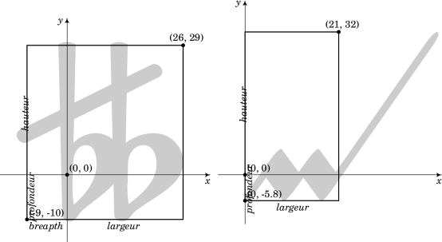
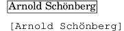
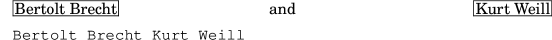
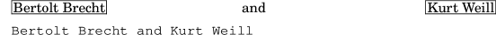
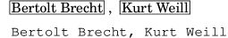
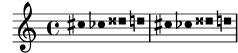

| [Top][Contents][Index] |
LilyPond — Extension des fonctionnalités
|
Ce document fournit les informations de base pour étendre les fonctionnalités de LilyPond version 2.26.0. |
| 1 Tutoriel Scheme | Programmation dans LilyPond. | |
| 2 Interfaces pour programmeurs | Comment dialoguer avec Scheme. | |
| 3 Interfaces LilyPond Scheme | Obtention d’information dans la musique et autour | |
Annexes | ||
|---|---|---|
| Appendix A GNU Free Documentation License | Licence de ce document. | |
| Appendix B Index | ||
|
Pour connaître la place qu’occupe ce manuel dans la documentation, consultez la page Manuels. Si vous ne disposez pas de certains manuels, la documentation complète se trouve sur https://lilypond.org/. |
| [ << Top ] | [Top][Contents][Index] | [ Interfaces pour programmeurs >> ] |
| [ < Top ] | [ Up: Top ] | [ Introduction à Scheme > ] |
1 Tutoriel Scheme
LilyPond recourt abondamment au langage de programmation Scheme, tant au niveau de la syntaxe de saisie que des mécanismes internes chargés de combiner les différents modules du logiciel. Les lignes qui suivent constituent un bref aperçu de la manière de saisir des données en Scheme. Si vous désirez en apprendre plus sur Scheme, n’hésitez pas à vous rendre sur https://www.Schemers.org.
Le Scheme utilisé par LilyPond repose sur l’implémentation GNU Guile ; celle-ci se base sur le standard Scheme « R5RS ». Si votre but est d’apprendre Scheme au travers de LilyPond, sachez que l’utilisation d’une autre implémentation ou d’un autre standard pourrait être source de désagrément. Vous trouverez plus d’information sur Guile à la page https://www.gnu.org/software/guile/ ; le standard Scheme « R5RS » est quant à lui disponible à la page https://www.Schemers.org/Documents/Standards/R5RS/.
| 1.1 Introduction à Scheme | ||
| 1.2 Scheme et LilyPond | ||
| 1.3 Construction de fonctions complexes |
| [ << Tutoriel Scheme ] | [Top][Contents][Index] | [ Interfaces pour programmeurs >> ] |
| [ < Tutoriel Scheme ] | [ Up: Tutoriel Scheme ] | [ Le bac à sable de Scheme > ] |
1.1 Introduction à Scheme
Nous commencerons par nous intéresser à Scheme et à son fonctionnement, grâce à l’interpréteur Guile. Une fois plus à l’aise avec Scheme, nous verrons comment ce langage peut s’intégrer à un fichier LilyPond.
| [ << Tutoriel Scheme ] | [Top][Contents][Index] | [ Interfaces pour programmeurs >> ] |
| [ < Introduction à Scheme ] | [ Up: Introduction à Scheme ] | [ Scheme et les variables > ] |
1.1.1 Le bac à sable de Scheme
L’installation de LilyPond comprend l’implémentation Guile de Scheme. Tous les paquetages de LilyPond disposent d’un « bac à sable » Scheme, accessible par la commande :
lilypond scheme-sandbox
Une fois le bac à sable actif, vous obtiendrez l’invite de Guile
lily-guile@()>
qui permet de saisir des expressions Scheme. Dans ce qui suit, nous
utiliserons simplement guile> pour indiquer le prompt.
Le fichier contenant le code du bac à sable –
ly/Scheme-sandbox.ly – essaie d’activer la bibliothèque GNU
readline, qui offre une ligne de commande plus élaborée, comme
par exemple l’utilisation des flèches de direction pour accéder aux
commandes précédentes. Ceci n’est fonctionnel, à ce jour, que lorsque le
binaire de LilyPond est lié dynamiquement à Guile, ce qui n’est pas le
cas avec les binaires « officiellement » distribués. Voici deux moyens
de contourner ce désagrément.
- Utiliser
rlwrap, petit programme « enveloppant » la bibliothèquereadline. Ce programme est disponibles pour les systèmes de type Unix ; il est lancé ainsi :rlwrap lilypond scheme-sandbox
- Utiliser l’éditeur Emacs auquel on ajoute le LilyPond Tree-sitter Mode. Ceci fonctionne aussi sur Windows.
| [ << Tutoriel Scheme ] | [Top][Contents][Index] | [ Interfaces pour programmeurs >> ] |
| [ < Le bac à sable de Scheme ] | [ Up: Introduction à Scheme ] | [ Types de données Scheme simples > ] |
1.1.2 Scheme et les variables
Une variable Scheme peut contenir n’importe quelle valeur valide en Scheme, y compris une procédure Scheme.
Une variable Scheme se crée avec la fonction define :
guile> (define a 2) guile>
L’évaluation d’une variable Scheme se réalise en saisissant le nom de cette variable à l’invite de Guile :
guile> a 2 guile>
Une variable Scheme s’affiche à l’écran à l’aide de la fonction
display :
guile> (display a) 2guile>
Vous aurez remarqué que la valeur 2 et l’invite guile
apparaissent sur une même ligne. On peut améliorer la présentation à
l’aide de la procédure newline ou bien en affichant un caractère
« retour chariot ».
guile> (display a)(newline) 2 guile> (display a)(display "\n") 2 guile>
Après avoir créé une variable, vous pouvez en modifier la valeur grâce à
un set! :
guile> (set! a 12345) guile> a 12345 guile>
Vous quitterez proprement le bac à sable à l’aide de l’instruction
quit :
guile> (quit)
| [ << Tutoriel Scheme ] | [Top][Contents][Index] | [ Interfaces pour programmeurs >> ] |
| [ < Scheme et les variables ] | [ Up: Introduction à Scheme ] | [ Types de données Scheme composites > ] |
1.1.3 Types de données Scheme simples
L’un des concepts de base de tout langage est la saisie de données, qu’il s’agisse de nombres, de chaînes de caractères, de listes, etc. Voici les différents types de données Scheme simples utilisées couramment dans LilyPond.
- Booléens
Les valeurs booléennes sont vrai ou faux. En Scheme, ce sera
#tpour vrai, et#fpour faux.- Nombres
Les nombres se saisissent le plus communément :
1est le nombre (entier) un, alors que-1.5est un nombre à virgule flottante (un nombre non entier).- Chaînes
Les chaînes de caractères sont bornées par des guillemets informatiques :
"ceci est une chaîne"
Une chaîne peut s’étendre sur plusieurs lignes :
"ceci est une chaîne"
auquel cas les retours à la ligne seront inclus dans la chaîne.
Un caractère de retour à la ligne peut s’ajouter dans la chaîne, sous la forme d’un
\n."ceci\nest une\nchaîne multiligne"
Guillemets et obliques inverses dans une chaîne doivent être précédés d’une oblique inverse. La chaîne
\a dit "b"se saisit donc"\\a dit \"b\""
Il existe bien d’autres types de données Scheme, dont nous ne parlerons pas ici. Vous en trouverez une liste exhaustive dans le guide de référence de Guile, à la page https://www.gnu.org/software/guile/manual/html_node/Data-Types.html.
| [ << Tutoriel Scheme ] | [Top][Contents][Index] | [ Interfaces pour programmeurs >> ] |
| [ < Types de données Scheme simples ] | [ Up: Introduction à Scheme ] | [ Paires > ] |
1.1.4 Types de données Scheme composites
Scheme prend aussi en charge des types de données composites. LilyPond utilise beaucoup les paires, listes, listes associatives et tables de hachage.
| Paires | ||
| Listes | ||
| Listes associatives (alists) | ||
| Tables de hachage |
| [ << Tutoriel Scheme ] | [Top][Contents][Index] | [ Interfaces pour programmeurs >> ] |
| [ < Types de données Scheme composites ] | [ Up: Types de données Scheme composites ] | [ Listes > ] |
Paires
Le type de donnée composite fondamental est la paire (pair).
Comme son nom l’indique, il s’agit de lier deux valeurs, à l’aide de
l’opérateur cons.
guile> (cons 4 5) (4 . 5) guile>
Vous aurez noté que la paire s’affiche sous la forme de deux éléments
bornés par des parenthèses et séparés par une espace, un point
(.) et une autre espace. Le point n’est en aucune manière un
séparateur décimal ; il s’agit de l’indicateur d’une paire.
Vous pouvez aussi saisir littéralement les valeurs d’une paire, en la faisant précéder d’une apostrophe.
guile> '(4 . 5) (4 . 5) guile>
Les deux éléments d’une paire peuvent être constitués de n’importe quelle valeur Scheme valide :
guile> (cons #t #f)
(#t . #f)
guile> '("blah-blah" . 3.1415926535)
("blah-blah" . 3.1415926535)
guile>
Les premier et second éléments de la paire sont accessibles à l’aide des
procédures Scheme car et cdr.
guile> (define mypair (cons 123 "hello there") … ) guile> (car mypair) 123 guile> (cdr mypair) "hello there" guile>
Note : cdr se prononce « couldeur », comme l’indiquent Sussman et
Abelson – voir
https://mitpress.mit.edu/sites/default/files/sicp/full-text/book/book-Z-H-14.html#footnote_Temp_133.
| [ << Tutoriel Scheme ] | [Top][Contents][Index] | [ Interfaces pour programmeurs >> ] |
| [ < Paires ] | [ Up: Types de données Scheme composites ] | [ Listes associatives (alists) > ] |
Listes
Autre structure de donnée commune en Scheme : la liste (list).
Une liste « correcte » se définit comme étant vide (représentée par
'() et de longueur 0) ou une paire dont le cdr est une
liste.
Il existe plusieurs méthodes pour créer une liste, la plus courante
étant l’utilisation de la procédure list :
guile> (list 1 2 3 "abc" 17.5) (1 2 3 "abc" 17.5)
La représentation d’une liste par la succession de ses éléments, séparés par des espaces, bornée par des parenthèses, n’est en fait qu’une vue compacte des paires qui la constituent. Les paires sont ainsi dépourvues du point de séparation et de la parenthèse ouvrante qui le suit et des parenthèses fermantes. Sans ce « compactage », cette liste serait ainsi présentée :
(1 . (2 . (3 . ("abc" . (17.5 . ())))))
Vous pouvez donc saisir une liste comme elle serait présentée, en entourant ses éléments par des parenthèses à la suite d’une apostrophe (afin que ce qui suit ne soit pas interprété comme un appel à une fonction) :
guile> '(17 23 "foo" "bar" "bazzle") (17 23 "foo" "bar" "bazzle")
Les listes ont une importance considérable en Scheme. Certains vont d’ailleurs jusqu’à considérer Scheme comme un dialecte du lisp, où « lisp » serait une abréviation de « List Processing ». Il est vrai que toute expression Scheme est une liste.
| [ << Tutoriel Scheme ] | [Top][Contents][Index] | [ Interfaces pour programmeurs >> ] |
| [ < Listes ] | [ Up: Types de données Scheme composites ] | [ Tables de hachage > ] |
Listes associatives (alists)
Il existe un type particulier de liste : la liste associative – ou alist. Une alist permet de stocker des données dans le but de les réutiliser.
Une liste associative est une liste dont les éléments sont des paires.
Le car de chacun des éléments constitue une clé (key) et
chaque cdr une valeur (value). La procédure Scheme
assoc permet de retrouver une entrée de la liste associative ;
son cdr en fournira la valeur :
guile> (define mon-alist '((1 . "A") (2 . "B") (3 . "C"))) guile> mon-alist ((1 . "A") (2 . "B") (3 . "C")) guile> (assoc 2 mon-alist) (2 . "B") guile> (cdr (assoc 2 mon-alist)) "B" guile>
LilyPond recourt abondamment aux alists pour stocker des propriétés ou autres données.
| [ << Tutoriel Scheme ] | [Top][Contents][Index] | [ Interfaces pour programmeurs >> ] |
| [ < Listes associatives (alists) ] | [ Up: Types de données Scheme composites ] | [ Scheme et les calculs > ] |
Tables de hachage
Il s’agit d’une structure de données à laquelle LilyPond fait parfois appel. Une table de hachage (hash table) peut se comparer à une matrice ou un tableau dont l’index peut être n’importe quel type de valeur Scheme et ne se limitant pas à des nombres entiers.
Les tables de hachage sont un moyen plus efficace que les listes associatives lorsqu’il s’agit d’enregistrer de nombreuses données qui ne changeront que peu fréquemment.
La syntaxe permettant de créer une table de hachage peut paraître complexe, mais vous en trouverez de nombreux exemples dans les sources de LilyPond.
guile> (define h (make-hash-table 10)) guile> h #<hash-table 0/31> guile> (hashq-set! h 'cle1 "valeur1") "valeur1" guile> (hashq-set! h 'key2 "valeur2") "valeur2" guile> (hashq-set! h 3 "valeur3") "valeur3"
La procédure hashq-ref permet de récupérer une valeur dans la
table de hachage.
guile> (hashq-ref h 3) "valeur3" guile> (hashq-ref h 'cle2) "valeur2" guile>
La procédure hashq-get-handle permet de retrouver à la fois une
clé et sa valeur. Cette procédure a l’avantage de renvoyer #f
lorsque la clé n’existe pas.
guile> (hashq-get-handle h 'cle1) (cle1 . "valeur1") guile> (hashq-get-handle h 'zut) #f guile>
| [ << Tutoriel Scheme ] | [Top][Contents][Index] | [ Interfaces pour programmeurs >> ] |
| [ < Tables de hachage ] | [ Up: Introduction à Scheme ] | [ Scheme et les procédures > ] |
1.1.5 Scheme et les calculs
Scheme permet aussi d’effectuer des calculs. Il utilise alors un
préfixe. Additionner 1 et 2 s’écrira (+ 1 2) et non
1+2 comme on aurait pu s’y attendre.
guile> (+ 1 2) 3
Les calculs peuvent s’imbriquer ; le résultat d’une fonction peut servir pour un autre calcul.
guile> (+ 1 (* 3 4)) 13
Ces calculs sont un exemple d’évaluation : une expression telle que
(* 3 4) est remplacée par sa valeur, soit 12.
En matière de calcul, Scheme fait la différence entre des nombres entiers ou non. Les calculs sur des nombres entiers seront exacts, alors que s’il s’agit de nombres non entiers, les calculs tiendront compte de la précision mentionnée :
guile> (/ 7 3) 7/3 guile> (/ 7.0 3.0) 2.33333333333333
Lorsque l’interpréteur Scheme rencontre une expression sous forme de liste, le premier élément de cette liste est considéré en tant que procédure qui prendra en argument le restant de la liste. C’est la raison pour laquelle, en Scheme, tous les opérateurs sont en préfixe.
Le fait que le premier élément d’une expression Scheme sous forme de liste ne soit pas un opérateur ou une procédure déclenchera une erreur de la part de l’interpréteur :
guile> (1 2 3) Backtrace: In current input: 52: 0* [1 2 3] <unnamed port>:52:1: In expression (1 2 3): <unnamed port>:52:1: Wrong type to apply: 1 ABORT: (misc-error) guile>
Vous pouvez constater que l’interpréteur a tenté de considérer 1
comme étant un opérateur ou une procédure, ce qu’il n’a pu réaliser. Il
a donc renvoyé l’erreur « Wrong type to apply: 1 » (Application
d’un type erroné : 1).
C’est pourquoi il est impératif, pour créer une liste, soit d’utiliser
l’opérateur consacré (list), soit de faire précéder la liste
d’une apostrophe, de telle sorte que l’interpréteur ne tente pas de
l’évaluer.
guile> (list 1 2 3) (1 2 3) guile> '(1 2 3) (1 2 3) guile>
Vous pourrez être confronté à cette erreur lorsque vous intégrerez Scheme à LilyPond.
| [ << Tutoriel Scheme ] | [Top][Contents][Index] | [ Interfaces pour programmeurs >> ] |
| [ < Scheme et les calculs ] | [ Up: Introduction à Scheme ] | [ Définition de procédures > ] |
1.1.6 Scheme et les procédures
Une procédure Scheme est une expression Scheme qui renverra une valeur issue de son exécution. Les procédures Scheme sont capables de manipuler des variables qui ne sont pas définies en leur sein.
| Définition de procédures | ||
| Prédicats | ||
| Valeurs de retour |
| [ << Tutoriel Scheme ] | [Top][Contents][Index] | [ Interfaces pour programmeurs >> ] |
| [ < Scheme et les procédures ] | [ Up: Scheme et les procédures ] | [ Prédicats > ] |
Définition de procédures
En Scheme, on définit une procédure à l’aide de l’instruction
define :
(define (nom-fonction argument1 argument2 … argumentn) expression-Scheme-qui-donnera-une-valeur-en-retour)
Nous pourrions, par exemple, définir une procédure calculant la moyenne de deux nombres :
guile> (define (moyenne x y) (/ (+ x y) 2)) guile> moyenne #<procedure moyenne (x y)>
Une fois la procédure définie, on l’appelle en la faisant suivre, dans une liste, des arguments qui doivent l’accompagner. Calculons maintenant la moyenne de 3 et 12 :
guile> (moyenne 3 12) 15/2
| [ << Tutoriel Scheme ] | [Top][Contents][Index] | [ Interfaces pour programmeurs >> ] |
| [ < Définition de procédures ] | [ Up: Scheme et les procédures ] | [ Valeurs de retour > ] |
Prédicats
Une procédure Scheme chargée de retourner une valeur booléenne s’appelle un « prédicat » (predicate). Par convention, plutôt que par nécessité, le nom d’un prédicat se termine par un point d’interrogation :
guile> (define (moins-de-dix? x) (< x 10)) guile> (moins-de-dix? 9) #t guile> (moins-de-dix? 15) #f
| [ << Tutoriel Scheme ] | [Top][Contents][Index] | [ Interfaces pour programmeurs >> ] |
| [ < Prédicats ] | [ Up: Scheme et les procédures ] | [ Scheme et les conditions > ] |
Valeurs de retour
Une procédure Scheme doit toujours renvoyer une valeur de retour, en l’occurrence la valeur de la dernière expression exécutée par cette procédure. La valeur de retour sera une valeur Scheme valide, y compris une structure de donnée complexe ou une procédure.
On peut avoir besoin de regrouper plusieurs expressions Scheme dans une
même procédure. Deux méthodes permettent de combiner des expressions
multiples. La première consiste à utiliser la procédure begin,
qui permet l’évaluation de plusieurs expressions et renvoie la valeur de
la dernière expression.
guile> (begin (+ 1 2) (- 5 8) (* 2 2)) 4
Une deuxième méthode consiste à combiner les expressions dans un bloc
let. Ceci aura pour effet de créer une série de liens, puis
d’évaluer en séquence les expressions susceptibles d’inclure ces liens.
La valeur renvoyée par un bloc let est la valeur de retour de la
dernière clause de ce bloc :
guile> (let ((x 2) (y 3) (z 4)) (display (+ x y)) (display (- z 4)) … (+ (* x y) (/ z x))) 508
| [ << Tutoriel Scheme ] | [Top][Contents][Index] | [ Interfaces pour programmeurs >> ] |
| [ < Valeurs de retour ] | [ Up: Introduction à Scheme ] | [ if > ] |
1.1.7 Scheme et les conditions
| if | ||
| cond |
| [ << Tutoriel Scheme ] | [Top][Contents][Index] | [ Interfaces pour programmeurs >> ] |
| [ < Scheme et les conditions ] | [ Up: Scheme et les conditions ] | [ cond > ] |
if
Scheme dispose d’une procédure if :
(if expression-test expression-affirmative expression-négative)
expression-test est une expression qui renverra une valeur
booléenne. Dans le cas où expression-test retourne #t, la
procédure if renvoie la valeur de expression-affirmative,
et celle de expression-négative dans le cas contraire.
guile> (define a 3) guile> (define b 5) guile> (if (> a b) "a est plus grand que b" "a n'est pas plus grand que b") "a n'est pas plus grand que b"
| [ << Tutoriel Scheme ] | [Top][Contents][Index] | [ Interfaces pour programmeurs >> ] |
| [ < if ] | [ Up: Scheme et les conditions ] | [ Scheme et LilyPond > ] |
cond
Une autre manière d’introduire une condition en Scheme est d’utiliser
l’instruction cond :
(cond (expression-test-1 expression-résultat-séquence-1)
(expression-test-2 expression-résultat-séquence-2)
…
(expression-test-n expression-résultat-séquence-n))
Comme par exemple ici :
guile> (define a 6) guile> (define b 8) guile> (cond ((< a b) "a est plus petit que b") … ((= a b) "a égale b") … ((> a b) "a est plus grand que b")) "a est plus petit que b"
| [ << Tutoriel Scheme ] | [Top][Contents][Index] | [ Interfaces pour programmeurs >> ] |
| [ < cond ] | [ Up: Tutoriel Scheme ] | [ Syntaxe Scheme dans LilyPond > ] |
1.2 Scheme et LilyPond
| [ << Tutoriel Scheme ] | [Top][Contents][Index] | [ Interfaces pour programmeurs >> ] |
| [ < Scheme et LilyPond ] | [ Up: Scheme et LilyPond ] | [ Variables LilyPond > ] |
1.2.1 Syntaxe Scheme dans LilyPond
L’installation de LilyPond comprenant l’interpréteur Guile, les fichiers source LilyPond peuvent contenir du Scheme. Vous disposez de plusieurs méthodes pour inclure du Scheme dans vos fichiers LilyPond.
La méthode la plus simple consiste à insérer un hash (le
caractère #, improprement appelé dièse) avant l’expression
Scheme.
Rappelons-nous qu’un fichier source LilyPond est structuré en jetons et expressions, tout comme le langage humain est structuré en mots et phrases. LilyPond dispose d’un analyseur lexical (appelé lexer) qui sait identifier les jetons – nombres, chaînes, éléments Scheme, hauteurs, etc. – ainsi que d’un analyseur syntaxique (appelé parser). Dès lors que le programme sait quelle règle grammaticale particulière doit s’appliquer, il exécute les consignes qui lui sont associées.
Le recours à un hash pour mettre en exergue du Scheme est tout à
fait approprié. Dès qu’il rencontre un #, l’analyseur lexical
passe le relais au lecteur Scheme qui va alors déchiffrer l’intégralité
de l’expression Scheme – ce peut être un identifiant, une expression
bornée par des parenthèses ou bien d’autres choses encore. Une fois
cette expression lue, elle est enregistrée en tant que valeur d’un
élément grammatical SCM_TOKEN. Puisque l’analyseur syntaxique
sait comment traiter ce jeton, il charge Guile d’évaluer l’expression
Scheme. Dans la mesure où le parser requiert une lecture en
avance de la part du lexer pour prendre une décision, cette
distinction entre lecture et évaluation – lexer et parser
– révèle toute sa pertinence lorsqu’il s’agit d’exécuter conjointement
des expressions LilyPond et des expressions Scheme. C’est la raison pour
laquelle nous vous recommandons, dans toute la mesure du possible,
d’utiliser un signe hash lorsque vous faites appel à Scheme.
Une autre manière de faire appel à l’interpréteur Scheme à partir de
LilyPond consiste à introduire une expression Scheme par un caractère
dollar au lieu d’un caractère dièse – un $ au lieu
d’un #. En pareil cas, LilyPond évalue le code dès sa lecture par
l’analyseur lexical, vérifie le type d’expression Scheme qui en résulte
et détermine un type de jeton (l’un des xxx_IDENTIFIER de la
grammaire) qui lui correspond, puis en fait une copie qui servira à
traiter la valeur de ce jeton. Lorsque la valeur de l’expression est
void, autrement dit une valeur Guile *unspecified* (pour
non spécifiée), aucune information n’est transmise à l’analyseur
grammatical.
C’est, en réalité, la manière dont LilyPond opère lorsque vous rappelez
une variable ou une fonction par son nom – au travers d’un \nom
–, à la seule différence que sa finalité est déterminée par l’analyseur
lexical de LilyPond sans consultation du lecteur Scheme ; le nom de la
variable rappelée doit donc être en corrélation avec le mode LilyPond
actif à ce moment là.
L’immédiateté de l’opérateur $ peut entraîner des effets
indésirables dont nous reparlerons à la rubrique
Saisie de variables et Scheme ; aussi est-il préférable d’utiliser
un # dès que l’analyseur grammatical le supporte. Dans le cadre
d’une expression musicale, une expression qui aura été créée à l’aide
d’un # sera interprétée comme étant de la musique. Elle ne sera
cependant pas recopiée avant utilisation. Si la structure qui l’abrite
devait être réutilisée, un appel explicite à ly:music-deep-copy
pourrait être requis.
Les opérateurs $@ et #@ agissent comme des « colleurs de
liste » : leur fonction consiste à insérer tous les éléments d’une liste
dans le contexte environnant.
Examinons à présent du vrai code Scheme. Nous pouvons définir des procédures Scheme au milieu d’un fichier source LilyPond :
#(define (moyenne a b c) (/ (+ a b c) 3))
Pour mémoire, vous noterez que les commentaires LilyPond (% ou
%{…%}) ne peuvent s’utiliser dans du code Scheme, même si
celui-ci se trouve au sein d’un fichier LilyPond. Ceci tient au fait que
l’expression Scheme est lue par l’interpréteur Guile, et en aucune façon
par l’analyseur lexical de LilyPond. Voici comment introduire des
commentaires dans votre code Scheme :
; ceci n'est qu'une simple ligne de commentaire #! Ceci constitue un bloc de commentaire (non imbricable) dans le style Guile. En fait, les Schemeurs les utilisent très rarement, et vous n'en trouverez jamais dans le code source de LilyPond. !#
Dans la suite de notre propos, nous partons du principe que les données
sont incluses dans un fichier musical, aussi toutes les expressions
Scheme seront introduites par un #.
Toutes les expressions Scheme de haut niveau incluses dans un fichier
LilyPond peuvent se combiner en une expression Scheme unique à l’aide de
la clause begin :
#(begin (define foo 0) (define bar 1))
| [ << Tutoriel Scheme ] | [Top][Contents][Index] | [ Interfaces pour programmeurs >> ] |
| [ < Syntaxe Scheme dans LilyPond ] | [ Up: Scheme et LilyPond ] | [ Débogage de code Scheme > ] |
1.2.2 Variables LilyPond
Les variables LilyPond sont enregistrées en interne sous la forme de variables Scheme. Ainsi,
douze = 12
est équivalant à
#(define douze 12)
Ceci a pour conséquence que toute variable LilyPond peut être utilisée dans une expression Scheme. Par exemple, nous pourrions dire
vingtQuatre = #(* 2 douze)
ce qui aurait pour conséquence que le nombre 24 sera stocké dans
la variable LilyPond (et Scheme) vingtQuatre.
Scheme autorise la modification d’expressions complexes au fil de l’eau,
ce que réalise LilyPond dans le cadre des fonctions musicales.
Toutefois, lorsqu’une expression musicale est stockée dans une variable
plutôt que saisie au fur et à mesure, on s’attend, alors qu’elle est
passée à une fonction musicale, à ce que sa valeur originale ne soit en
rien modifiée. C’est la raison pour laquelle faire référence à une
variable à l’aide d’une oblique inverse – autrement dit saisir
\vingtQuatre – aura pour effet que LilyPond créera une copie de
la valeur musicale de cette variable aux fins de l’utiliser au sein de
l’expression musicale au lieu d’utiliser directement la valeur de cette
variable.
Par voie de conséquence, une expression musicale introduite par #
ne devrait pas contenir de matériau inexistant auparavant ou bien
littéralement recopié, mais plutôt une référence explicite.
Voir aussi
Manuel d’extension : Syntaxe Scheme dans LilyPond.
| [ << Tutoriel Scheme ] | [Top][Contents][Index] | [ Interfaces pour programmeurs >> ] |
| [ < Variables LilyPond ] | [ Up: Scheme et LilyPond ] | [ Saisie de variables et Scheme > ] |
1.2.3 Débogage de code Scheme
Lorsque l’on débogue de larges portions de code Scheme, il est bien
appréciable que soit mise en évidence la ligne du programme à la source
même de l’erreur. LilyPond permet la localisation dans les sources pour
les erreurs Scheme dès lors qu’est ajoutée à la ligne de commande
l’option -dcompile-Scheme-code. L’ajout d’une ligne
#(ly:set-option 'compile-Scheme-code) en tête d’un fichier
LilyPond aura le même effet.
Par ailleurs, il est possible d’obtenir encore plus d’informations au
sujet de l’erreur grâce à l’option -ddebug-eval – ou une
ligne #(debug-enable 'backtrace) dans le fichier. Grâce à ce
mode, et dès la survenance d’une erreur, s’affiche en mode verbeux une
« trace inverse » contenant des informations sur tous les appels de
fonction, ce qui permet de remonter le fil jusqu’à la pierre
d’achoppement.
Problèmes connus et avertissements
En raison d’une limitation dans l’implémentation de Guile, l’option -dcompile-Scheme-code ne permet pas de compiler des fichiers LilyPond comportant au-delà de quelques milliers d’expressions Scheme.
| [ << Tutoriel Scheme ] | [Top][Contents][Index] | [ Interfaces pour programmeurs >> ] |
| [ < Débogage de code Scheme ] | [ Up: Scheme et LilyPond ] | [ Import de code Scheme dans LilyPond > ] |
1.2.4 Saisie de variables et Scheme
Le format de saisie prend en charge la notion de variable – ou
identifiant. Dans l’exemple suivant, une expression musicale se voit
attribuer un identifiant qui portera le nom de traLaLa.
traLaLa = { c'4 d'4 }
Une variable a aussi une portée. Dans l’exemple suivant, le bloc
\layout contient une variable traLaLa tout à fait
indépendante de l’autre \traLaLa.
traLaLa = { c'4 d'4 }
\layout { traLaLa = 1.0 }
Dans les faits, chaque fichier a un domaine de compétence, et les
différents blocs \header, \midi et \layout ont leur
propre champ de compétence, imbriqué dans ce domaine principal.
Variables et champs de compétence sont implémentés par le système de modules de Guile. Un module anonyme Scheme est attaché à chacun de ces domaines. Une assertion telle que
traLaLa = { c'4 d'4 }
est convertie, en interne, en une définition Scheme :
(define traLaLa valeur Scheme de '…')
Cela signifie que variables LilyPond et variables Scheme peuvent tout à
fait se mélanger. Dans l’exemple suivant, un fragment musical est stocké
dans la variable traLaLa puis dupliqué à l’aide de Scheme. Le
résultat est alors importé dans un bloc \score au moyen d’une
seconde variable twice.
traLaLa = { c'4 d'4 } #(define newLa (map ly:music-deep-copy (list traLaLa traLaLa))) #(define twice (make-sequential-music newLa)) \twice
![[image of music]](c8/lily-79e9e275.png)
Cet exemple est particulièrement intéressant. L’assignation
n’interviendra qu’une fois que l’analyseur grammatical aura l’assurance
que rien du type de \addlyrics ne suit ; il doit donc vérifier ce
qui vient après. Le parser lit le # et l’expression Scheme
qui le suit sans l’évaluer, de telle sorte qu’il peut procéder
à l’assignation, et ensuite exécuter le code Scheme sans
problème.
| [ << Tutoriel Scheme ] | [Top][Contents][Index] | [ Interfaces pour programmeurs >> ] |
| [ < Saisie de variables et Scheme ] | [ Up: Scheme et LilyPond ] | [ Propriétés des objets > ] |
1.2.5 Import de code Scheme dans LilyPond
L’exemple précédent illustre la manière « d’exporter » une expression
musicale à partir des saisies et à destination de l’interpréteur Scheme.
L’inverse est aussi réalisable : en la plaçant derrière un $, une
valeur Scheme sera interprétée comme si elle avait été saisie en syntaxe
LilyPond. Au lieu de définir \twice, nous aurions tout aussi bien
pu écrire
… $(make-sequential-music newLa)
Vous pouvez utiliser $ suivi d’une expression Scheme partout où
vous auriez utilisé \nom, dès lors que vous aurez assigné à
cette expression Scheme le nom de variable nom. La substitution
intervenant au niveau de l’analyseur lexical (le lexer), LilyPond
ne saurait faire la différence.
Cette manière de procéder comporte cependant un inconvénient au niveau
de la temporisation. Si nous avions défini newLa avec un $
plutôt qu’un #, la définition Scheme suivante aurait échoué du
fait que traLaLa n’était pas encore défini. Pour plus
d’information quant au problème de synchronisation, voir la rubrique
Syntaxe Scheme dans LilyPond.
Une autre façon de procéder serait de recourir aux « colleurs de liste »
$@ et #@ dont la fonction est d’insérer les éléments
d’une liste dans le contexte environnant. Grâce à ces opérateurs, la
dernière partie de notre fonction pourrait s’écrire ainsi :
…
{ #@newLa }
Ici, chaque élément de la liste stockée dans newLa est pris à
son tour et inséré dans la liste, tout comme si nous avions écrit
{ #(premier newLa) #(deuxième newLa) }
Dans ces deux dernières formes, le code Scheme est évalué alors même que le code initial est en cours de traitement, que ce soit par le lexer ou par le parser. Si le code Scheme ne doit être exécuté que plus tard, consultez la rubrique Fonctions Scheme fantômes, ou stockez-le dans une procédure comme ici :
#(define (nopc)
(ly:set-option 'point-and-click #f))
…
#(nopc)
{ c'4 }
| [ << Tutoriel Scheme ] | [Top][Contents][Index] | [ Interfaces pour programmeurs >> ] |
| [ < Import de code Scheme dans LilyPond ] | [ Up: Scheme et LilyPond ] | [ Variables LilyPond composites > ] |
1.2.6 Propriétés des objets
Les propriétés des objets sont stockées dans LilyPond sous la forme d’enchaînements de listes associatives, autrement dit des listes de listes associatives. Une propriété se détermine par l’ajout de valeurs en début de liste de cette propriété. Les caractéristiques d’une propriété s’ajustent donc à la lecture des différentes valeurs des listes associatives.
La modification d’une valeur pour une propriété donnée requiert l’assignation d’une valeur de la liste associative, tant pour la clé que pour la valeur associée. Voici comment procéder selon la syntaxe de LilyPond :
\override Stem.thickness = #2.6
Cette instruction ajuste l’apparence des hampes. Une entrée
'(thickness . 2.6) de la alist est ajoutée à la liste
de la propriété de l’objet Stem. thickness devant
s’exprimer en unité d’épaisseur de ligne, les hampes auront donc une
épaisseur de 2,6 lignes de portée, et à peu près le double de leur
épaisseur normale. Afin de faire la distinction entre les variables que
vous définissez au fil de vos fichiers – tel le vingtQuatre que
nous avons vu plus haut – et les variables internes des objets, nous
parlerons de « propriétés » pour ces dernières, et de « variables » pour
les autres. Ainsi, l’objet hampe possède une propriété thickness,
alors que vingtQuatre est une variable.
| [ << Tutoriel Scheme ] | [Top][Contents][Index] | [ Interfaces pour programmeurs >> ] |
| [ < Propriétés des objets ] | [ Up: Scheme et LilyPond ] | [ Décalages (offsets) > ] |
1.2.7 Variables LilyPond composites
| Décalages (offsets) | ||
| Fractions | ||
| Étendues (extents) | ||
| Propriété en alist | ||
| Chaînes d’alist |
| [ << Tutoriel Scheme ] | [Top][Contents][Index] | [ Interfaces pour programmeurs >> ] |
| [ < Variables LilyPond composites ] | [ Up: Variables LilyPond composites ] | [ Fractions > ] |
Décalages (offsets)
Les décalages (offset) sur deux axes (coordonnées X et Y) sont
stockés sous forme de paires. Le car de l’offset
correspond à l’abscisse (coordonnée X) et le cdr à l’ordonnée
(coordonnée Y).
\override TextScript.extra-offset = #'(1 . 2)
Cette clause affecte la paire (1 . 2) à la propriété
extra-offset de l’objet TextScript. Ces nombres sont
exprimés en espace de portée. La commande aura donc pour effet de
déplacer l’objet d’un espace de portée vers la droite, et de deux
espaces vers le haut.
Les procédures permettant de manipuler les offsets sont regroupées dans le fichier scm/lily-library.scm.
| [ << Tutoriel Scheme ] | [Top][Contents][Index] | [ Interfaces pour programmeurs >> ] |
| [ < Décalages (offsets) ] | [ Up: Variables LilyPond composites ] | [ Étendues (extents) > ] |
Fractions
Les fractions, telles que LilyPond les utilise, sont aussi stockées sous
forme de paire. Alors que Scheme est tout à fait capable de
représenter des nombres rationnels, vous conviendrez que, musicalement
parlant, ‘2/4’ et ‘1/2’ ne se valent pas ; nous devrons donc
pouvoir les distinguer. Dans le même ordre d’idée, LilyPond ne connaît
pas les « fractions » négatives. Pour ces raisons, 2/4 en
LilyPond correspond à (2 . 4) en Scheme, et #2/4 en
LilyPond correspond à 1/2 en Scheme.
| [ << Tutoriel Scheme ] | [Top][Contents][Index] | [ Interfaces pour programmeurs >> ] |
| [ < Fractions ] | [ Up: Variables LilyPond composites ] | [ Propriété en alist > ] |
Étendues (extents)
Les paires permettent aussi de stocker des intervalles qui représentent
un ensemble de nombres compris entre un minimum (le car) et un
maximum (le cdr). Ces intervalles stockent l’étendue, tant au
niveau horizontal (X) que vertical (Y) des objets imprimables. En
matière d’étendue sur les X, le car correspond à la coordonnée de
l’extrémité gauche, et le cdr à la coordonnée de l’extrémité
droite. En matière d’étendue sur les Y, le car correspond à la
coordonnée de l’extrémité basse, et le cdr à la coordonnée de
l’extrémité haute.
Les procédures permettant de manipuler les offsets sont regroupées dans le fichier scm/lily-library.scm. Nous vous recommandons l’utilisation de ces procédures dans toute la mesure du possible afin d’assurer la cohérence du code.
| [ << Tutoriel Scheme ] | [Top][Contents][Index] | [ Interfaces pour programmeurs >> ] |
| [ < Étendues (extents) ] | [ Up: Variables LilyPond composites ] | [ Chaînes d’alist > ] |
Propriété en alist
Les propriétés en alist sont des structures de données particulières à LilyPond. Il s’agit de listes associatives dont les clés sont des propriétés et les valeurs des expressions Scheme fournissant la valeur requise pour cette propriété.
Les propriétés LilyPond sont des symboles Scheme, à l’instar de
'thickness.
| [ << Tutoriel Scheme ] | [Top][Contents][Index] | [ Interfaces pour programmeurs >> ] |
| [ < Propriété en alist ] | [ Up: Variables LilyPond composites ] | [ Le modèle de boîte de LilyPond > ] |
Chaînes d’alist
Une chaîne d’alist est une liste contenant les listes associatives d’une propriété.
L’intégralité du jeu de propriétés qui doivent s’appliquer à un objet graphique est en fait stocké en tant que chaîne d’alist. Afin d’obtenir la valeur d’une propriété particulière qu’un objet graphique devrait avoir, on examinera chacune des listes associatives de la chaîne, à la recherche d’une entrée contenant la clé de cette propriété. Est renvoyée la première entrée d’alist trouvée, sa valeur étant la valeur de la propriété.
L’obtention des valeurs de propriété des objets graphiques se réalise en
principe à l’aide de la procédure Scheme chain-assoc-get.
| [ << Tutoriel Scheme ] | [Top][Contents][Index] | [ Interfaces pour programmeurs >> ] |
| [ < Chaînes d’alist ] | [ Up: Scheme et LilyPond ] | [ Représentation interne de la musique > ] |
1.2.8 Le modèle de boîte de LilyPond
Le modèle de boîte « classique » pour du texte – tel qu’en vigueur par exemple chez TeX – comporte les trois dimensions largeur, hauteur et profondeur : les glyphes sont positionnés sur une ligne de base horizontale de texte ; la hauteur d’un glyphe est l’empan vertical au-dessus de cette ligne, la profondeur l’empan au-dessous de cette ligne et la largeur représente l’étendue horizontale de ce glyphe. LilyPond y ajoute une quatrième dimension, breapth,1 pour étendre la taille horizontale quelque peu sur la gauche du « point de référence » du glyphe, noté « (0, 0) » dans l’image ci-dessous. La raison principale à cette extension tient au fait que de nombreux glyphes, tel que le point d’orgue, ont une symétrie horizontale (et sont aussi attachés symétriquement à une tête de note) et que le meilleur point de référence de tels glyphes est par conséquent le centre horizontal. D’autres glyphes, comme par exemple l’altération de quart de ton présent sur la gauche de l’image, disposent quant à eux d’un breapth considérable.

Comme l’indique le glyphe de guidon sur la droite de l’image, la boîte définie pour un glyphe diffère souvent et de façon considérable avec ce qui est en fait imprimé : LilyPond positionne le côté droit du glyphe de guidon à la fin d’une portée, faisant dépasser la ligne d’extension à droite dans la marge.
Ce modèle de boîte sert non seulement aux glyphes musicaux de LilyPond,
mais aussi pour les markups quelle qu’en soit la nature. Les
dimensions, tant horizontale que verticale, sont spécifiées en terme
d’étendue ; utilisant la notation Scheme, le glyphe de gauche dans
l’image ci-dessus a une étendue horizontale de #'(-9 . 26) et une
étendue verticale de #'(-10 . 29).
LilyPond utilise aussi quelques extensions au modèle de boîte afin de couvrir certains cas particuliers.
- Lorsqu’une boîte de devrait pas intervenir dans l’algorithme
d’espacement de la musique sur un axe donné, l’étendue sur cet axe est
fixé à la valeur de
#'(+inf.0 . -inf.0)qui ailleurs serait absurde, aussi disponible en tant que symboleempty-interval. - En matière de markup, l’espacement, qui normalement
déclenche un déplacement horizontal ou vertical de l’objet qui suit dans
le markup, est aussi fixé de manière interne en tant que boîte :
l’étendue sur l’axe orthogonal est définie à
empty-intervalen tant que marqueur, et une valeur s d’espacement est représentée par l’étendue#'(0 . s). Contrairement aux boîtes « normales », l’espacement peut aussi être négatif : par exemple, l’étendue horizontale de la commande de markup\hspace #-4est#'(0 . -4).
| [ << Tutoriel Scheme ] | [Top][Contents][Index] | [ Interfaces pour programmeurs >> ] |
| [ < Le modèle de boîte de LilyPond ] | [ Up: Scheme et LilyPond ] | [ Construction de fonctions complexes > ] |
1.2.9 Représentation interne de la musique
Dans les entrailles du programme, la musique se présente comme une liste Scheme. Cette liste comporte les différents éléments qui affecteront la sortie imprimable. L’analyse grammaticale (l’opération parsing) est le processus chargé de convertir la musique représentée par le code LilyPond en présentation interne Scheme.
L’analyse d’une expression musicale se traduit par un jeu d’objets musicaux en Scheme. Une objet musical est déterminé par le temps qu’il occupe, que l’on appelle durée. Les durées s’expriment par des nombres rationnels représentant la longueur d’un objet musical par rapport à la ronde.
Un objet musical dispose de trois types :
- un nom de musique : toute expression musicale a un nom. Par exemple, une
note amène à un NoteEvent, un
\simultaneousà un SimultaneousMusic. Une liste exhaustive des différentes expressions est disponible dans la référence des propriétés internes, à la rubrique Music expressions. - un « type » ou interface : tout nom de musique dispose de plusieurs
types ou interfaces. Ainsi, une note est tout à la fois un
event, unnote-event, unrhythmic-eventet unmelodic-event. Les différentes classes musicales sont répertoriées à la rubrique Music classes de la référence des propriétés internes. - un objet C++ : tout objet musical est représenté par un objet de la
classe C++
Music.
L’information réelle d’une expression musicale est enregistrée sous
forme de propriétés. Par exemple, un NoteEvent dispose des
propriétés pitch et duration, respectivement chargées de
stocker la hauteur et la durée de cette note. Les différentes propriétés
sont répertoriées à la rubrique Music properties de la
référence des propriétés internes.
Une expression composite est un objet musical dont les propriétés
contiennent d’autres objets musicaux. S’il s’agit d’une liste d’objets,
elle sera stockée dans la propriété elements d’un objet musical ;
s’il n’y a qu’un seul objet « enfant », il sera stocké dans la propriété
element. Ainsi, par exemple, les enfants de
SequentialMusic iront dans elements, alors que
l’argument unique de GraceMusic ira dans element. De
même, le corps d’une répétition ira dans la propriété element
d’un VoltaRepeatedMusic, les alternatives quant à elles dans la
propriété elements.
| [ << Tutoriel Scheme ] | [Top][Contents][Index] | [ Interfaces pour programmeurs >> ] |
| [ < Représentation interne de la musique ] | [ Up: Tutoriel Scheme ] | [ Première approche (exemple) > ] |
1.3 Construction de fonctions complexes
Nous allons voir dans cette partie les moyens dont vous disposez pour obtenir les informations qui vous permettront de créer vos propres fonctions musicales complexes.
1.3.1 Première approche (exemple)
- La problématique
Partant du code suivant, l’indication « espressivo » (les deux petits soufflets) devrait être plus large, mais pas gagner en hauteur.
{ f'\espressivo }
![[image of music]](73/lily-49561ead.png)
- Les solutions envisageables
- créer un nouveau stencil
- redimensionner le stencil par défaut sur l’axe des X
- Réflexions sur le point précédent
La solution A est réalisable, mais demandera plus d’effort de codage. Quant à la solution B, bien que moins exigeante, elle a le désavantage de ne pas donner de résultats acceptables dans tous les cas – mais on ne le saura pas avant d’avoir essayé.
⇒ opter pour la solution B.
- Codage
- Si l’on veut manipuler le stencil par défaut, il faut s’informer à son
sujet.
L’indication d’espressivo est un objet graphique
Script. En consultant la référence des propriétés internes, on lit‘stencil’ (stencil): ‘ly:script-interface::print’Voyons voir si tout cela marche. Pour être assurés d’affecter le bon grob, nous utiliserons des couleurs. Il existe une fonction prédéfinie à cet effet – voir Scheme functions.
-- Fonction: stencil-with-color stencil couleur Renvoie une version modifiée du stencil donné, teint dans la couleur donnée. Voir ‘normalize-color’ pour les formats de couleur possibles.-- Fonction: normalize-color couleur Convertit une couleur donnée dans l'un des formats pris en charge en une liste de 4 nombres : R, G, B, A. Les formats possibles sont : une liste de 4 nombres ; une liste de 3 nombres (transparence par défaut à 1.0) ; une chaîne CSS (nom de couleur, ou “#RRGGBB”, “#RRGGBBAA”, “#RGB” ou “#RGBA”).Utilisant un nom de couleur (‘red’), nous obtenons le code suivant :
colorDefaultStencil = \once \override Script.stencil = % `lambda` starts a procedure; its argument is `grob`. #(lambda (grob) ;; With `let`, local variables are defined. (let ((stil (ly:script-interface::print grob))) ;; The procedure returns the colored default stencil. (stencil-with-color stil red))) { \colorDefaultStencil f'\espressivo }
![[image of music]](eb/lily-bdc4f771.png)
Parfait, cela fonctionne.
- Ce type d’opération – prendre un stencil ou une propriété par défaut
et en retourner une version modifiée – est très courante, et LilyPond
dispose d’une fonction dédiée à cet effet :
grob-transformer.-- Function: grob-transformer property func Create an override value good for applying FUNC to either pure or unpure values. FUNC is called with the respective grob as first argument and the default value (after resolving all callbacks) as the second.Laissons-nous tenter. Les concepts de pur ou impur seront vus plus avant, dans Conteneurs requalifiants ; ignorons-les pour l’instant.
colorDefaultStencil = \once \override Script.stencil = #(grob-transformer 'stencil (lambda (grob orig) (stencil-with-color orig red))) { \colorDefaultStencil f'\espressivo }
![[image of music]](df/lily-d6caa1a5.png)
Excellent !
- Pour obtenir un stencil redimensionné, il faut utiliser
-- Function: ly:stencil-scale stil x y Scale stencil STIL using the horizontal and vertical scaling factors X and optional Y (defaulting to X). Negative values flip or mirror STIL without changing its origin; this may result in collisions unless it is repositioned.à partir du même chapitre de la référence des propriétés internes.
Résultat :
scaleColorDefaultStencil = \once \override Script.stencil = #(grob-transformer 'stencil (lambda (grob orig) (stencil-with-color (ly:stencil-scale orig ;; 1 is the neutral element with ly:stencil-scale, ;; i.e., scaling with '1 1' (for x- and y-axis) ;; returns a visibly unchanged stencil. 2 1) red))) { \scaleColorDefaultStencil f'\espressivo }
![[image of music]](c9/lily-e6550537.png)
Mis à part la couleur, cela ressemble fort à ce que l’on voulait.
- Certains problèmes subsistent cependant, comme le montre l’exemple
suivant :
{ \scaleColorDefaultStencil f'_\espressivo ^\fermata }![[image of music]](a9/lily-b3b8c45f.png)
- − Le point d’orgue est redimensionné lui aussi.
- − Devoir taper la commande avant les notes et
\espressivoaprès ces notes n’est pas pratique.
Solution aux deux inconvénients : utilisons
\tweak!{ f'-\tweak stencil #(grob-transformer 'stencil (lambda (grob orig) (stencil-with-color (ly:stencil-scale orig 2 1) red))) _\espressivo ^\fermata }
![[image of music]](7a/lily-335bb7c4.png)
Cela fait ce qui est demandé, mais autant de saisie n’est pas la panacée ; pourquoi ne pas définir une variable que l’on utiliserait dans le tweak ? Après un peu de copier coller, nous obtenons
#(define longer-script (grob-transformer 'stencil (lambda (grob orig) (stencil-with-color (ly:stencil-scale orig 2 1) red)))) { f'-\tweak stencil #longer-script _\espressivo ^\fermata }
![[image of music]](91/lily-04a6c2cb.png)
Cela fonctionne correctement, bien que les valeurs soient codées en dur et que taper
-\tweak stencil #longer-scriptsans arrêt soit rébarbatif.Pour régler cela, commençons par introduire des variables dans
longer-scriptpour les valeurs de redimensionnement x et y.#(define (longer-script x y) (grob-transformer 'stencil (lambda (grob orig) (stencil-with-color (ly:stencil-scale orig x y) red))))Ensuite, et pour réduire la frappe, nous définissons une fonction événementielle – voir Fonctions événementielles. Les éléments du premier groupe entre parenthèses –
(x-val y-val)– sont les variables de la fonction, et les éléments du second groupe entre parenthèses sont les types respectifs de variable (on cherche deux fois un nombre – voir Types de prédicat prédéfinis pour les possibilités de test).scaleEspr = #(define-event-function (x-val y-val) (number? number?) #{ \tweak stencil #(longer-script x-val y-val) \espressivo #}) { f'_\scaleEspr 2 1 ^\fermata }![[image of music]](21/lily-c7d54992.png)
Cela fonctionne à merveille ! Notez l’utilisation de
#{ … #}: dans cette construction Scheme, il est tout à fait possible d’utiliser la syntaxe de LilyPond, et les arguments de la fonction, tel que x-val, sont correctement expansés – voir Blocs de code LilyPond.
- Si l’on veut manipuler le stencil par défaut, il faut s’informer à son
sujet.
- Le code finalisé
Pour terminer, faisons un peu de ménage.
- − Nous souhaitons redimensionner uniquement dans l’horizontalité ; nous pouvons donc forcer le redimensionnement vertical dans la fonction événementielle.
- − Supprimons la couleur.
Ceci nous amène au code suivant.
#(define (longer-script x y) (grob-transformer 'stencil (lambda (grob orig) (ly:stencil-scale orig x y)))) longEspressivo = #(define-event-function (x-val) (number?) #{ \tweak stencil #(longer-script x-val 1) \espressivo #}) { f'^\longEspressivo #2 _\fermata }
![[image of music]](38/lily-7080d09c.png)
Voilà !
Le principal bénéfice à l’utilisation de
grob-transformerréside dans le fait que nul n’est besoin de connaître le nom exact de la fonction de stencil. Dans l’exemple qui suit, nous pivotons une liaison et une ligature de 90 degrés – que les fonction de stencil s’appellent respectivemently:slur::printetly:beam::printn’est d’aucun intérêt en l’occurrence.#(define rotate-90 (grob-transformer 'stencil (lambda (grob orig) (ly:stencil-rotate orig 90 0 0)))) { f'8( g') f'8-\tweak stencil #rotate-90 ( g') f'8[ g'] f'8-\tweak stencil #rotate-90 [ g'] }
![[image of music]](1c/lily-cfcb9a55.png)
| [ << Tutoriel Scheme ] | [Top][Contents][Index] | [ Interfaces pour programmeurs >> ] |
| [ < Première approche (exemple) ] | [ Up: Construction de fonctions complexes ] | [ Propriétés musicales > ] |
1.3.2 Affichage d’expressions musicales
Lorsque l’on veut écrire une fonction musicale, il est intéressant
d’examiner comment une expression musicale est représentée en interne.
Vous disposez à cet effet de la fonction musicale \displayMusic.
{
\displayMusic { c'4\f }
}
affichera
(make-music
'SequentialMusic
'elements
(list (make-music
'NoteEvent
'articulations
(list (make-music
'AbsoluteDynamicEvent
'text
"f"))
'duration
(ly:make-duration 2 0 1/1)
'pitch
(ly:make-pitch 0 0 0))))
Par défaut, LilyPond affichera ces messages sur la console, parmi toutes
les autres informations. Vous pouvez, afin de les isoler et de garder le
résultat des commandes \display{TRUC}, spécifier un port
optionnel à utiliser pour la sortie :
{
\displayMusic #(open-output-file "display.txt") { c'4\f }
}
Ceci aura pour effet d’écraser tout fichier précédemment généré. Lorsque plusieurs expressions doivent être retranscrites, il suffit de faire appel à une variable pour le port puis de la réutiliser :
{
port = #(open-output-file "display.txt")
\displayMusic \port { c'4\f }
\displayMusic \port { d'4 }
#(close-output-port port)
}
La documentation de Guile fournit une description détaillée des ports. Clôturer un port n’est requis que si vous désirez consulter le fichier avant que LilyPond n’ait fini, ce dont nous ne nous sommes pas préoccupé dans le premier exemple.
L’information sera encore plus lisible après un peu de mise en forme :
(make-music 'SequentialMusic
'elements (list
(make-music 'NoteEvent
'articulations (list
(make-music 'AbsoluteDynamicEvent
'text
"f"))
'duration (ly:make-duration 2 0 1/1)
'pitch (ly:make-pitch 0 0 0))))
Une séquence musicale { … } se voit attribuer le nom de
SequentialMusic, et les expressions qu’elle contient sont
enregistrées en tant que liste dans sa propriété 'elements. Une
note est représentée par un objet NoteEvent – contenant les
propriétés de durée et hauteur – ainsi que l’information qui lui est
attachée – en l’occurrence un AbsoluteDynamicEvent ayant une
propriété text de valeur "f" – et stockée dans sa
propriété articulations.
La fonction \displayMusic renvoie la musique qu’elle affiche ;
celle-ci sera donc aussi interprétée. L’insertion d’une commande
\void avant le \displayMusic permet de s’affranchir de la
phase d’interprétation.
1.3.3 Propriétés musicales
Nous abordons ici les propriétés music, et non pas les propriétés context ou layout.
Partons de cet exemple simple :
someNote = c' \displayMusic \someNote ===> (make-music 'NoteEvent 'duration (ly:make-duration 2 0 1/1) 'pitch (ly:make-pitch 0 0 0))
L’objet NoteEvent est la représentation brute de someNote.
Voyons ce qui se passe lorsque nous plaçons ce c’ dans une
construction d’accord :
someNote = <c'>
\displayMusic \someNote
===>
(make-music
'EventChord
'elements
(list (make-music
'NoteEvent
'duration
(ly:make-duration 2 0 1/1)
'pitch
(ly:make-pitch 0 0 0))))
L’objet NoteEvent est maintenant le premier objet de la propriété
'elements de someNote.
\displayMusic utilise la fonction display-Scheme-music
pour afficher la représentation en Scheme d’une expression musicale :
#(display-Scheme-music (first (ly:music-property someNote 'elements))) ===> (make-music 'NoteEvent 'duration (ly:make-duration 2 0 1/1) 'pitch (ly:make-pitch 0 0 0))
La hauteur de la note est accessible au travers de la propriété
'pitch de l’objet NoteEvent :
#(display-Scheme-music
(ly:music-property (first (ly:music-property someNote 'elements))
'pitch))
===>
(ly:make-pitch 0 0 0)
La hauteur de la note se modifie en définissant sa propriété
'pitch :
#(set! (ly:music-property (first (ly:music-property someNote 'elements))
'pitch)
(ly:make-pitch 0 1 0)) ;; set the pitch to d'.
\displayLilyMusic \someNote
===>
d'4
| [ << Tutoriel Scheme ] | [Top][Contents][Index] | [ Interfaces pour programmeurs >> ] |
| [ < Propriétés musicales ] | [ Up: Construction de fonctions complexes ] | [ Ajout d’articulation à des notes (exemple) > ] |
1.3.4 Doublement d’une note avec liaison (exemple)
Supposons que nous ayons besoin de créer une fonction transformant une
saisie a en { a( a) }. Commençons par examiner
comment le résultat est représenté en interne.
\displayMusic{ a'( a') }
===>
(make-music
'SequentialMusic
'elements
(list (make-music
'NoteEvent
'articulations
(list (make-music
'SlurEvent
'span-direction
-1))
'duration
(ly:make-duration 2 0 1/1)
'pitch
(ly:make-pitch 0 5 0))
(make-music
'NoteEvent
'articulations
(list (make-music
'SlurEvent
'span-direction
1))
'duration
(ly:make-duration 2 0 1/1)
'pitch
(ly:make-pitch 0 5 0))))
Mauvaise nouvelle ! Les expressions SlurEvent doivent s’ajouter
« à l’intérieur » de la note – dans sa propriété articulations.
Examinons à présent la saisie :
\displayMusic a' ===> (make-music 'NoteEvent 'duration (ly:make-duration 2 0 1/1) 'pitch (ly:make-pitch 0 5 0))))
Nous aurons donc besoin, dans notre fonction, de cloner cette expression
– de telle sorte que les deux notes constituent la séquence – puis
d’ajouter un SlurEvent à la propriété 'articulations de
chacune d’elles, et enfin réaliser un SequentialMusic de ces deux
éléments NoteEvent. En tenant compte du fait que, dans le cadre
d’un ajout, une propriété non définie est lue '() (une liste
vide), aucune vérification n’est requise avant d’introduire un nouvel
élément en tête de la propriété articulations.
doubleSlur = #(define-music-function (note) (ly:music?)
"Renvoie : { note ( note ) }.
`note` est censé être une note unique."
(let ((note2 (ly:music-deep-copy note)))
(set! (ly:music-property note 'articulations)
(cons (make-music 'SlurEvent 'span-direction -1)
(ly:music-property note 'articulations)))
(set! (ly:music-property note2 'articulations)
(cons (make-music 'SlurEvent 'span-direction 1)
(ly:music-property note2 'articulations)))
(make-music 'SequentialMusic 'elements (list note note2))))
1.3.5 Ajout d’articulation à des notes (exemple)
Le moyen d’ajouter une articulation à des notes consiste à juxtaposer deux expressions musicales. L’option de réaliser nous-mêmes une fonction musicale à cette fin.
Un $variable au milieu de la notation #{ … #} se
comporte exactement comme un banal \variable en notation LilyPond
traditionnelle. Nous pourrions écrire
{ \musique -. -> }
mais, pour les besoins de la démonstration, nous allons voir comment réaliser ceci en Scheme. Commençons par examiner une saisie simple et le résultat auquel nous désirons aboutir :
% saisie
\displayMusic c4
===>
(make-music
'NoteEvent
'duration
(ly:make-duration 2 0 1/1)
'pitch
(ly:make-pitch -1 0 0))))
=====
% résultat attendu
\displayMusic c4->
===>
(make-music
'NoteEvent
'articulations
(list (make-music
'ArticulationEvent
'articulation-type 'accent))
'duration
(ly:make-duration 2 0 1/1)
'pitch
(ly:make-pitch -1 0 0))
Nous voyons qu’une note (c4) est représentée par une expression
NoteEvent. Si nous souhaitons ajouter une articulation
accent, nous devrons ajouter une expression
ArticulationEvent à la propriété articulations de
l’expression NoteEvent.
Construisons notre fonction en commençant par
(define (ajoute-accent note-event)
"Ajoute un accent (ArticulationEvent) aux articulations de `note-event`,
qui est censé être une expression NoteEvent."
(set! (ly:music-property note-event 'articulations)
(cons (make-music 'ArticulationEvent
'articulation-type 'accent)
(ly:music-property note-event 'articulations)))
note-event)
La première ligne est la manière de définir une fonction en Scheme : la
fonction Scheme a pour nom ajoute-accent et elle comporte une
variable appelée note-event. En Scheme, le type d’une variable se
déduit la plupart de temps de par son nom – c’est d’ailleurs une
excellente pratique que l’on retrouve dans de nombreux autres langages.
"Ajoute un accent…"
décrit ce que fait la fonction. Bien que ceci ne soit pas primordial, tout comme des noms de variable évidents, tâchons néanmoins de prendre de bonnes habitudes dès nos premiers pas.
Vous pouvez vous demander pourquoi nous modifions directement
l’événement note plutôt que d’en manipuler une copie – on pourrait
utiliser ly:music-deep-copy à cette fin. La raison en est qu’il
existe un contrat tacite : les fonctions musicales sont autorisées à
modifier leurs arguments – ils sont générés en partant de zéro (comme
les notes que vous saisissez) ou déjà recopiés (faire référence à une
variable musicale avec ‘\nom’ ou à de la musique issue
d’expressions Scheme ‘$(…)’ aboutit à une copie). Dans la
mesure où surmultiplier les copies serait contre productif, la valeur de
retour d’une fonction musicale n’est pas recopiée. Afin de
respecter ce contrat, n’utilisez pas un même argument à plusieurs
reprises, et n’oubliez pas que le retourner compte pour une utilisation.
Dans un exemple précédent, nous avons construit de la musique en
répétant un certain argument musical. Dans ce cas là, l’une des
répétitions se devait d’être une copie. Dans le cas contraire, certaines
bizarreries auraient pu survenir. Par exemple, la présence d’un
\relative ou d’un \transpose, après plusieurs répétitions
du même élément, entraînerait des « relativisations » ou transpositions
en cascade. Si nous les assignons à une variable musicale,
l’enchaînement est rompu puisque la référence à ‘\nom’ créera une
nouvelle copie sans toutefois prendre en considération l’identité des
éléments répétés.
Cette fonction n’étant pas une fonction musicale à part entière, elle
peut s’utiliser dans d’autres fonctions musicales. Il est donc sensé de
respecter le même contrat que pour les fonctions musicales : l’entrée
peut être modifiée pour arriver à une sortie, et il est de la
responsabilité de l’appelant d’effectuer des copies s’il a réellement
besoin de l’argument dans son état originel. Vous constaterez, à la
lecture des fonctions propres à LilyPond, comme music-map, que ce
principe est toujours respecté.
Revenons à nos moutons… Nous disposons maintenant d’un note-event
que nous pouvons modifier, non pas grâce à un ly:music-deep-copy,
mais plutôt en raison de notre précédente réflexion. Nous ajoutons
l’accent à la liste de ses propriétés 'articulations.
(set! emplacement nouvelle-valeur)
L’emplacement est ce que nous voulons ici définir. Il s’agit de la
propriété 'articulations de l’expression note-event.
(ly:music-property note-event 'articulations)
La fonction ly:music-property permet d’accéder aux propriétés
musicales – les 'articulations, 'duration,
'pitch, etc. que \displayMusic nous a indiquées. La
nouvelle valeur sera l’ancienne propriété 'articulations,
augmentée d’un élément : l’expression ArticulationEvent, que nous
recopions à partir des informations de \displayMusic.
(cons (make-music 'ArticulationEvent
'articulation-type 'accent)
(ly:music-property result-event-chord 'articulations))
cons permet d’ajouter un élément en tête de liste sans pour
autant modifier la liste originale. C’est exactement ce que nous
recherchons : la même liste qu’auparavant, plus la nouvelle expression
ArticulationEvent. L’ordre au sein de la propriété
'articulations n’a ici aucune importance.
Enfin, après avoir ajouté l’articulation accent à sa
propriété articulations, nous pouvons renvoyer le
note-event, ce que réalise la dernière ligne de notre fonction.
Nous pouvons à présent transformer la fonction ajoute-accent en
fonction musicale, à l’aide d’un peu d’enrobage syntaxique et mention du
type de son argument.
ajouteAccent = #(define-music-function (note-event) (ly:music?)
"Ajoute un accent (ArticulationEvent) aux articulations de `note-event`,
qui est censé être une expression NoteEvent."
(set! (ly:music-property note-event 'articulations)
(cons (make-music 'ArticulationEvent
'articulation-type 'accent)
(ly:music-property note-event 'articulations)))
note-event)
Par acquis de conscience, vérifions que tout ceci fonctione :
\displayMusic \ajouteAccent c4
| [ << Tutoriel Scheme ] | [Top][Contents][Index] | [ Interfaces LilyPond Scheme >> ] |
| [ < Ajout d’articulation à des notes (exemple) ] | [ Up: Top ] | [ Blocs de code LilyPond > ] |
2 Interfaces pour programmeurs
Scheme permet de réaliser des affinages très pointus. Si vous ne connaissez rien de Scheme, vous en aurez un aperçu au travers de notre Tutoriel Scheme.
| [ << Interfaces pour programmeurs ] | [Top][Contents][Index] | [ Interfaces LilyPond Scheme >> ] |
| [ < Interfaces pour programmeurs ] | [ Up: Interfaces pour programmeurs ] | [ Fonctions Scheme > ] |
2.1 Blocs de code LilyPond
L’utilisation de Scheme pour créer des expressions musicales peut s’avérer ardue, principalement à cause des imbrications et de la longueur du code Scheme qui en résulte. Dans le cas de tâches simples, on peut toutefois contourner une partie du problème en utilisant des blocs de code LilyPond, ce qui autorise la syntaxe habituelle de LilyPond au sein même de Scheme.
Les blocs de code LilyPond ressemblent à
#{ du code LilyPond #}
En voici un exemple basique :
ritpp = #(define-event-function () () #{ ^"rit." \pp #} ) { c'4 e'4\ritpp g'2 }![[image of music]](07/lily-940d6f5e.png)
Les blocs de code LilyPond peuvent s’utiliser partout où vous pouvez écrire du code Scheme. Le lecteur Scheme est en fait quelque peu adapté pour accepter des blocs de code LilyPond ; il est capable de traiter des expressions Scheme intégrées débutant par ‘$’ ou ‘#’.
Le lecteur Scheme extrait le bloc de code LilyPond et déclenche un appel
à l’analyseur grammatical de LilyPond (le parser) qui réalise en
temps réel l’interprétation de ce bloc de code LilyPond. Toute
expression Scheme imbriquée est exécutée dans l’environnement lexical du
bloc de code LilyPond, de telle sorte que vous avez accès aux variables
locales et aux paramètres de la fonction au moment même où le bloc de
code LilyPond est écrit. Les variables définies dans d’autres modules
Scheme, tels ceux contenant les blocs \header ou \layout,
ne sont pas accessibles en tant que variables Scheme (préfixées par
un ‘#’) mais en tant que variables LilyPond (préfixées par
un ‘\’).
Toute la musique générée au sein de ce bloc de code voit son
origine établie à cet emplacement.
Un bloc de code LilyPond peut contenir tout ce que vous pourriez mettre à droite de l’assignation. Par ailleurs, un bloc LilyPond vide correspond à une expression fantôme, et un bloc LilyPond de multiples événements musicaux sera transformé en une expression de musique séquentielle.
| [ << Interfaces pour programmeurs ] | [Top][Contents][Index] | [ Interfaces LilyPond Scheme >> ] |
| [ < Blocs de code LilyPond ] | [ Up: Interfaces pour programmeurs ] | [ Définition de fonctions Scheme > ] |
2.2 Fonctions Scheme
Les fonctions Scheme sont des procédures Scheme chargées de créer des expressions Scheme à partir de code rédigé selon la syntaxe de LilyPond. Elles peuvent être appelées en de nombreux endroits, à l’aide d’un ‘#’, où spécifier une valeur en syntaxe Scheme est autorisé. Bien que Scheme dispose de fonctions en propre, nous nous intéresserons, au fil des paragraphes qui suivent, aux fonctions syntaxiques, autrement dit des fonctions qui reçoivent des arguments libellés dans la syntaxe de LilyPond.
| 2.2.1 Définition de fonctions Scheme | ||
| 2.2.2 Utilisation de fonctions Scheme | ||
| 2.2.3 Fonctions Scheme fantômes |
| [ << Interfaces pour programmeurs ] | [Top][Contents][Index] | [ Interfaces LilyPond Scheme >> ] |
| [ < Fonctions Scheme ] | [ Up: Fonctions Scheme ] | [ Utilisation de fonctions Scheme > ] |
2.2.1 Définition de fonctions Scheme
D’une manière générale, une fonction Scheme se définit ainsi :
fonction =
#(define-scheme-function
(arg1 arg2…)
(type1? type2?…)
corps)
où
argNn-ième argument.
typeN?Un type de prédicat Scheme pour lequel
argNdevra retourner#t. Il existe aussi une forme spécifique –(prédicat? default)– qui permet de fournir des argument optionnels. En l’absence d’argument réel au moment de l’appel à la fonction, c’est la valeur par défaut qui lui sera substituée. Les valeurs par défaut sont évaluées dès l’apparition de la définition, y compris dans le cas de blocs de code LilyPond ; vous devrez donc, si ces valeurs par défaut ne peuvent être déterminées que plus tard, mentionner une valeur spéciale que vous reconnaîtrez facilement. Lorsque vous mentionnez un prédicat entre parenthèses sans toutefois fournir sa valeur par défaut, celle-ci sera considérée comme étant#f. Les valeurs par défaut d’unprédicat?ne sont vérifiées ni au moment de la définition, ni à l’exécution ; il est de votre ressort de gérer les valeurs que vous spécifiez. Une valeur par défaut constituée d’une expression musicale est recopiée dès la définition deoriginà l’emplacement courant du code.corpsUne séquence de formules Scheme évaluées dans l’ordre, la dernière servant de valeur de retour de la fonction. Il peut contenir des blocs de code LilyPond, enchâssés dans des accolades et hashes –
#{…#}– comme indiqué à la rubrique Blocs de code LilyPond. Au sein d’un bloc de code LilyPond, un ‘#’ permet de référencer des arguments de la fonction – tel#arg1– ou d’ouvrir une expression Scheme contenant les arguments de la fonction – par exemple ‘#(cons arg1 arg2)’. Dans le cas où une expression Scheme introduite par ‘#’ ne vous permet pas de parvenir à vos fins, vous pourriez devoir revenir à une expression Scheme « immédiate » à l’aide d’un ‘$’, comme$music.Lorsque votre fonction retourne une expression musicale, lui est attribuée la valeur
origin.
La recevabilité des arguments est déterminée par un appel effectif au prédicat après que LilyPond les a déjà convertis en expression Scheme. Par voie de conséquence, l’argument peut tout à fait se libeller en syntaxe Scheme – introduite par un ‘#’ ou en tant que résultat d’un appel à une fonction Scheme. Par ailleurs, LilyPond convertira en Scheme un certain nombre de constructions purement LilyPond avant même d’en avoir vérifié le prédicat. C’est notamment le cas de la musique, des postévénements, des chaînes simples (avec ou sans guillemets), des nombres, des markups et listes de markups, ainsi que des blocs score, book, bookpart, ou qui définissent un contexte ou un format de sortie.
Il existe certaines situations pour lesquelles LilyPond lèvera toute
ambiguïté grâce aux fonctions de prédicat : un ‘-3’ est-il un
postévénement de type doigté ou un nombre négatif ? Un
"a" 4 en mode paroles est-il une chaîne suivie d’un nombre ou
bien un événement syllabe de durée 4 ? LilyPond répondra à ces
questions par des interprétations successives du prédicat de l’argument,
dans un ordre défini de sorte à minimiser les interprétations erronées
et le besoin de lecture en avance.
Un prédicat qui accepte par exemple aussi bien une expression musicale
qu’une hauteur considérera c'' comme étant une hauteur plutôt
qu’une expression musicale. Les durées ou postévénements qui
viennent juste après viendront modifier cette interprétation. C’est la
raison pour laquelle il vaut mieux éviter des prédicats par trop
permissifs tel que Scheme? lorsque l’application fait plutôt
appel à des types d’argument plus spécifiques.
Les différents types de prédicat propres à LilyPond sont recensés à l’annexe Types de prédicats prédéfinis.
Voir aussi
Manuel de notation : Types de prédicats prédéfinis.
Fichiers d’initialisation : lily/music-Scheme.cc, scm/c++.scm, scm/lily.scm.
| [ << Interfaces pour programmeurs ] | [Top][Contents][Index] | [ Interfaces LilyPond Scheme >> ] |
| [ < Définition de fonctions Scheme ] | [ Up: Fonctions Scheme ] | [ Fonctions Scheme fantômes > ] |
2.2.2 Utilisation de fonctions Scheme
Vous pouvez appeler une fonction Scheme pratiquement partout où une expression Scheme derrière un ‘#’ peut prendre place. Vous appelez une fonction Scheme à partir de LilyPond en faisant précéder son nom d’un ‘\’, et en le faisant suivre de ses arguments. Lorsqu’un prédicat d’argument optionnel ne correspond pas à un argument, LilyPond l’ignore ainsi que tous les arguments optionnels qui suivent, les remplaçant par leur valeur par défaut, et « sauvegarde » en tant que prochain argument obligatoire l’argument qui ne correspondait pas. Dans la mesure où l’argument sauvegardé doit servir, les argument optionnels ne sont en fait pas considérés comme optionnels, sauf à être suivis d’un argument obligatoire.
Une exception cependant à cette règle : le fait de donner un
\default en tant qu’argument optionnel aura pour résultat que cet
argument et tous les autres arguments optionnels qui suivent seront
ignorés et remplacés par leur valeur par défaut. Il en va de même
lorsqu’aucun argument obligatoire ne suit, du fait que \default
ne requiert pas de sauvegarde. C’est d’ailleurs ainsi que fonctionnent
les commandes mark et key, qui retrouvent leur
comportement par défaut lorsque vous les faites suivre d’un
\default.
En plus de là où une expression Scheme est requise, il y a quelques endroits où des expressions ‘#’ sont acceptées et évaluées uniquement pour leurs effets annexes. Il s’agit, dans la plupart des cas, d’endroits où une affectation serait tout à fait envisageable.
Dans la mesure où il n’est pas bon de renvoyer une valeur qui pourrait être mal interprétée dans certains contextes, nous vous enjoignons à utiliser des fonctions Scheme normales uniquement dans les cas où vous renvoyez toujours une valeur utile, et une fonction fantôme – voir Fonctions Scheme fantômes – dans le cas contraire.
Pour des raisons de commodité, il est possible de faire appel à des
fonctions Scheme directement en Scheme, court-circuitant ainsi
l’analyseur de LilyPond. Leur nom s’utilise comme n’importe quel nom de
fonction. Le contrôle de typologie des arguments et l’omission des
arguments optionnels seront traités de la même manière que lorsque
l’appel est fait à partir de LilyPond, la valeur Scheme
*unspecified* ayant le rôle du mot réservé \default pour
omettre explicitement les arguments optionnels. Les arguments optionnels
en fin de liste d’arguments peuvent être omis sans plus d’indication
lorsque l’appel est fait au sein même de Scheme.
| [ << Interfaces pour programmeurs ] | [Top][Contents][Index] | [ Interfaces LilyPond Scheme >> ] |
| [ < Utilisation de fonctions Scheme ] | [ Up: Fonctions Scheme ] | [ Fonctions musicales > ] |
2.2.3 Fonctions Scheme fantômes
Il arrive qu’une procédure soit exécutée pour réaliser une action, non
pour renvoyer une valeur. Certains langages de programmation, tels le C
et Scheme, utilisent des fonctions dans les deux cas et se débarrassent
tout bonnement de la valeur renvoyée ; en règle générale, il suffit que
l’expression fasse office de déclaration, et d’ignorer le résultat.
C’est futé, mais pas sans risque d’erreur : la plupart des compilateurs
C actuels déclenchent un avertissement si l’on se débarrasse de
certaines expressions non-void. Pour de nombreuses fonctions
réalisant une action, les standards Scheme déclarent que la valeur de
retour est indéfinie. L’interpréteur Guile qu’utilise le Scheme de
LilyPond dispose d’une valeur unique *unspecified* qu’il retourne
alors, en règle générale – notamment lorsqu’on utilise set!
directement sur une variable – mais malheureusement pas toujours.
Une fonction LilyPond définie à l’aide de la clause
define-void-function vous apporte l’assurance que c’est cette
valeur spéciale – la seule valeur qui satisfasse au prédicat
void? – qui sera retournée.
noPointAndClick =
#(define-void-function
()
()
(ly:set-option 'point-and-click #f))
…
\noPointAndClick % desactive le "pointer-cliquer"
L’utilisation d’un préfixe \void permet ainsi d’évaluer une
expression pour ses effets annexes sans interprétation d’une quelconque
valeur de retour :
\void #(hashq-set! une-table une-clé une-valeur)
Vous serez alors assuré que LilyPond ne tentera pas d’affecter un sens à
la valeur de retour, à quelque endroit qu’elle ressorte. Ceci est aussi
opérationnel dans le cadre de fonctions musicales telles que
\displayMusic.
| [ << Interfaces pour programmeurs ] | [Top][Contents][Index] | [ Interfaces LilyPond Scheme >> ] |
| [ < Fonctions Scheme fantômes ] | [ Up: Interfaces pour programmeurs ] | [ Définition de fonctions musicales > ] |
2.3 Fonctions musicales
Les fonctions musicales sont des procédures Scheme capables de créer automatiquement des expressions musicales ; elles permettent de grandement simplifier un fichier source.
| [ << Interfaces pour programmeurs ] | [Top][Contents][Index] | [ Interfaces LilyPond Scheme >> ] |
| [ < Fonctions musicales ] | [ Up: Fonctions musicales ] | [ Utilisation de fonctions musicales > ] |
2.3.1 Définition de fonctions musicales
Une fonction musicale se définit ainsi :
fonction =
#(define-music-function
(arg1 arg2…)
(type1? type2?…)
corps)
de manière similaire aux fonctions Scheme. La plupart du temps, le corps sera constitué d’un bloc de code LilyPond.
Les différents types des prédicat sont recensés à l’annexe Types de prédicats prédéfinis.
Voir aussi
Manuel de notation : Types de prédicats prédéfinis.
Fichiers d’initialisation : lily/music-Scheme.cc, scm/c++.scm, scm/lily.scm.
| [ << Interfaces pour programmeurs ] | [Top][Contents][Index] | [ Interfaces LilyPond Scheme >> ] |
| [ < Définition de fonctions musicales ] | [ Up: Fonctions musicales ] | [ Fonctions de substitution simple > ] |
2.3.2 Utilisation de fonctions musicales
En ce qui concerne la gestion des listes d’arguments, les fonctions musicales ne diffèrent en rien des fonction Scheme – voir Utilisation de fonctions Scheme.
Une « fonction musicale » doit impérativement renvoyer une expression
répondant au prédicat ly:music?. Ceci a pour conséquence
d’autoriser l’appel à une fonction musicale en tant qu’argument de type
ly:music? dans le cadre de l’appel à une autre fonction musicale.
Certaines restrictions s’appliqueront selon le contexte où une fonction musicale est utilisée, de telle sorte que l’analyse syntaxique soit sans ambiguïté.
- Dans une expression musicale de haut niveau, aucun postévénement n’est toléré.
- Lorsqu’une fonction musicale – contrairement à une fonction
événementielle – renvoie une expression de type postévénement, LilyPond
requiert son introduction par un indicateur de positionnement – à
savoir
-,^ou_– de telle sorte que le postévénement produit par l’appel à cette fonction s’intègre correctement dans l’expression environnante. - En tant que partie d’un accord, l’expression musicale renvoyée doit
être du type
rhythmic-event, et plus particulièrement unNoteEvent.
Des fonctions « polymorphes » telles que \tweak peuvent
s’appliquer aux postévénements, constituants d’accord et expressions de
haut niveau.
2.3.3 Fonctions de substitution simple
Une fonction de substitution simple renvoie une expression musicale écrite au format LilyPond et contient des arguments au format de l’expression résultante. Vous en trouverez une description détaillée à la rubrique Exemples de fonction de substitution.
2.3.4 Fonctions de substitution intermédiaires
Une fonction de substitution intermédiaire est une fonction dont l’expression musicale résultante mélangera du code Scheme au code LilyPond.
Certaines commandes \override nécessitent un argument
supplémentaire constitué d’une paire de nombres, appelée cons
cell en Scheme – que l’on pourrait traduire par « construction de
cellule ».
Cette paire peut se mentionner directement dans la fonction musicale à
l’aide d’une variable pair? :
manualBeam =
#(define-music-function
(beg-end)
(pair?)
#{
\once \override Beam.positions = #beg-end
#})
\relative c' {
\manualBeam #'(3 . 6) c8 d e f
}
Autre manière de procéder, les nombres formant la paire sont transmis comme arguments séparés ; le code Scheme chargé de créer la paire pourra alors être inclus dans l’expression musicale :
manualBeam = #(define-music-function (beg end) (number? number?) #{ \once \override Beam.positions = #(cons beg end) #}) \relative c' { \manualBeam #3 #6 c8 d e f }![[image of music]](5f/lily-731446d4.png)
L’entretien des propriétés peut se voir comme un empilement par
propriété par objet par contexte. Les fonctions musicales peuvent
nécessiter des dérogations pour une ou plusieurs propriétés pour la
durée de la fonction, puis de revenir aux valeurs précédentes avant de
quitter. Néanmoins, une dérogation normale va retirer de la pile – ou
dépiler – et supprimer le sommet de la pile de la propriété avant d’y
ajouter quoi que ce soit – ou empiler – ; la valeur précédente de la
propriété est de fait perdue. Lorsque la valeur antérieure doit être
préservée, l’instruction \override devra être préfixée d’un
\temporary, comme ceci :
\temporary \override …
L’utilisation d’un \temporary a pour effet d’effacer la propriété
pop-first (commence par dépiler normalement activée) de la
dérogation ; la valeur antérieure ne sera alors pas supprimée de la pile
de la propriété avant d’y empiler la nouvelle valeur. Lorsqu’un
\revert viendra par la suite supprimer la valeur dérogatoire
temporaire, réapparaîtra la valeur antérieure.
En d’autres termes, un \revert qui suit un \temporary
\override pour la même propriété n’apporte rien. Ce principe est aussi
valable pour un couple \temporary et \undo sur la même
musique contenant des dérogations.
Voici un exemple de fonction musicale utilisant cette fonctionnalité. La
présence du \temporary permet de s’assurer qu’en sortant de la
fonction, les propriétés cross-staff et style retrouveront
les valeurs qu’elles avaient avant que ne soit appelée la fonction
crossStaff. En l’absence de \temporary, ces propriétés
auraient retrouvé leurs valeurs par défaut à la sortie de la fonction.
crossStaff =
#(define-music-function (notes) (ly:music?)
(_i "Create cross-staff stems")
#{
\temporary \override Stem.cross-staff = #cross-staff-connect
\temporary \override Flag.style = #'no-flag
#notes
\revert Stem.cross-staff
\revert Flag.style
#})
2.3.5 De l’usage des mathématiques dans les fonctions
Une fonction musicale peut requérir, en plus d’une simple substitution, une part de programmation en Scheme.
AltOn = #(define-music-function (mag) (number?) #{ \override Stem.length = #(* 7.0 mag) \override NoteHead.font-size = #(inexact->exact (* (/ 6.0 (log 2.0)) (log mag))) #}) AltOff = { \revert Stem.length \revert NoteHead.font-size } \relative { c'2 \AltOn #0.5 c4 c \AltOn #1.5 c c \AltOff c2 }![[image of music]](6a/lily-8930534e.png)
Cette fonction pourrait tout à fait être réécrite de telle sorte qu’elle s’applique à une expression musicale :
withAlt = #(define-music-function (mag music) (number? ly:music?) #{ \override Stem.length = #(* 7.0 mag) \override NoteHead.font-size = #(inexact->exact (* (/ 6.0 (log 2.0)) (log mag))) #music \revert Stem.length \revert NoteHead.font-size #}) \relative { c'2 \withAlt #0.5 { c4 c } \withAlt #1.5 { c c } c2 }![[image of music]](57/lily-312a376e.png)
2.3.6 Fonctions dépourvues d’argument
Dans la plupart des cas, une fonction dépourvue d’argument devrait être créée à l’aide d’une variable :
dolce = \markup{ \italic \bold dolce }
Il peut, dans certains cas particuliers, s’avérer utile de créer une fonction sans argument comme ici,
displayBarNum =
#(define-music-function
()
()
(if (eq? #t (ly:get-option 'display-bar-numbers))
#{ \once \override Score.BarNumber.break-visibility = ##f #}
#{#}))
de manière à pouvoir afficher les numéros de mesure grâce à un appel à
cette fonction. En pareil cas, vous devrez invoquer lilypond
en respectant la syntaxe
lilypond -d display-bar-numbers MONFICHIER.ly
| [ << Interfaces pour programmeurs ] | [Top][Contents][Index] | [ Interfaces LilyPond Scheme >> ] |
| [ < Fonctions dépourvues d’argument ] | [ Up: Fonctions musicales ] | [ Fonctions événementielles > ] |
2.3.7 Fonctions musicales fantômes
Une fonction musicale doit renvoyer une expression musicale. Toutefois,
une fonction musicale peut n’être exécutée que dans le but d’en retenir
les effets annexes ; vous devrez alors utiliser une procédure
define-void-function. Il peut cependant arriver que vous ayez
besoin d’une fonction qui, selon le cas, produise ou non (comme dans
l’exemple de la rubrique précédente) une expression musicale.
L’utilisation d’un #{ #} vous permettra de renvoyer une
expression musicale void.
| [ << Interfaces pour programmeurs ] | [Top][Contents][Index] | [ Interfaces LilyPond Scheme >> ] |
| [ < Fonctions musicales fantômes ] | [ Up: Interfaces pour programmeurs ] | [ Fonctions pour markups > ] |
2.4 Fonctions événementielles
L’utilisation d’une fonction musicale pour placer un événement requiert
l’insertion d’un indicateur de position, ce qui peut ne pas correspondre
à la syntaxe de la construction à remplacer. C’est par exemple le cas
lorsque vous voulez écrire une commande de nuance, instruction qui ne
comporte habituellement pas d’indicateur de positionnement, comme dans
c'\pp. Voici de quoi vous permettre de mentionner n’importe
quelle nuance :
dyn=#(define-event-function (arg) (markup?) (make-dynamic-script arg)) \relative { c'\dyn pfsss }![[image of music]](80/lily-3d7e8ecb.png)
Vous pourriez obtenir le même résultat avec une fonction musicale, à
ceci près que chaque appel à la fonction devra être précédé d’un
indicateur de positionnement, comme c-\dyn pfsss.
| [ << Interfaces pour programmeurs ] | [Top][Contents][Index] | [ Interfaces LilyPond Scheme >> ] |
| [ < Fonctions événementielles ] | [ Up: Interfaces pour programmeurs ] | [ Construction d’un markup en Scheme > ] |
2.5 Fonctions pour markups
Les markups sont implémentés au travers de fonctions Scheme
spécifiques qui produisent des objets Stencil comprenant un
certain nombre d’arguments.
| 2.5.1 Construction d’un markup en Scheme | ||
| 2.5.2 Fonctionnement interne des markups | ||
| 2.5.3 Définition d’une nouvelle commande de markup | ||
| 2.5.4 Définition d’une nouvelle commande de liste de markups |
| [ << Interfaces pour programmeurs ] | [Top][Contents][Index] | [ Interfaces LilyPond Scheme >> ] |
| [ < Fonctions pour markups ] | [ Up: Fonctions pour markups ] | [ Fonctionnement interne des markups > ] |
2.5.1 Construction d’un markup en Scheme
Les expressions markup sont représentées en Scheme de manière
interne par la macro markup :
(markup expression)
La commande \displayScheme permet d’obtenir la représentation en
Scheme d’une expression markup :
\displayScheme
\markup {
\column {
\line { \bold \italic "hello" \raise #0.4 "world" }
\larger \line { foo bar baz }
}
}
Compiler ce code renverra en console les lignes suivantes :
(markup
#:line
(#:column
(#:line
(#:bold (#:italic "hello") #:raise 0.4 "world")
#:larger
(#:line ("foo" "bar" "baz")))))
L’impression du markup sera suspendue dès lors qu’apparaîtra un
‘\void \displayScheme markup’. Tout comme pour la
commande \displayMusic, le résultat de \displayScheme peut
être sauvegardé dans un fichier séparé. Voir à ce sujet
Affichage d’expressions musicales.
Vous pouvez constater les principales règles de traduction entre les
syntaxes respectives de LilyPond et de Scheme en matière de
markup. Bien que le passage en syntaxe LilyPond grâce à
#{ … #} apporte de la souplesse, nous allons voir comment
utiliser la macro markup en Scheme exclusivement.
LilyPond Scheme \markup markup1(markup markup1)\markup { markup1 markup2… }(markup markup1 markup2… )\commande-markup#:commande-markup\variablevariable\center-column { … }#:center-column ( … )chaîne"chaîne"#argument-Schemeargument-Scheme
L’intégralité du langage Scheme est accessible à l’intérieur même de la
macro markup. Vous pouvez ainsi appeler des fonctions à partir de
markup pour manipuler des chaînes de caractères, ce qui est
particulièrement pratique lorsque vous créez votre propre commande de
markup – voir Définition d’une nouvelle commande de markup.
Problèmes connus et avertissements
L’argument markup-list des commandes #:line,
#:center-column ou #:column ne saurait être une variable
ni le résultat de l’appel à une fonction.
(markup #:line (fonction-qui-retourne-des-markups))
n’est pas valide. Il vaut mieux, en pareil cas, utiliser les fonctions
make-line-markup, make-center-column-markup ou
make-column-markup :
(markup (make-line-markup (fonction-qui-retourne-des-markups)))
2.5.2 Fonctionnement interne des markups
Dans un markup tel que
\raise #0.5 "text example"
\raise représente en fait la fonction raise-markup.
L’expression markup est enregistrée sous la forme
(list raise-markup 0.5 "text example")
Lorsque ce markup est converti en objets imprimables (stencils),
la fonction raise-markup est appelée ainsi :
(apply raise-markup
\layout objet
liste des alists de propriété
0.5
le markup "text example")
La fonction raise-markup commence par créer le stencil pour la
chaîne text example, puis remonte ce stencil d’un demi espace de
portée. Il s’agit là d’un exemple relativement simple, et nous en
aborderons de plus complexes au fil des paragraphes suivants ; d’autres
exemples se trouvent directement dans le fichier
scm/define-markup-commands.scm.
| [ << Interfaces pour programmeurs ] | [Top][Contents][Index] | [ Interfaces LilyPond Scheme >> ] |
| [ < Fonctionnement interne des markups ] | [ Up: Fonctions pour markups ] | [ Syntaxe d’une commande markup > ] |
2.5.3 Définition d’une nouvelle commande de markup
Nous allons étudier dans ce qui suit la manière de définir une nouvelle commande de markup.
| Syntaxe d’une commande markup | ||
| Attribution de propriétés | ||
| Exemple commenté | ||
| Adaptation d’une commande incorporée | ||
| Conversion de markups en chaînes |
Syntaxe d’une commande markup
Une commande de markup personnalisée se définit à l’aide de la
macro Scheme define-markup-command, placée en tête de fichier.
(define-markup-command (nom-commande layout props arg1 arg2…)
(arg1-type? arg2-type?…)
[ #:properties ((propriété1 valeur-par-défaut1)
…) ]
[ #:as-string expression ]
…corps de la commande…)
Quelques commentaires sur les arguments :
nom-commandele nom que vous attribuez à votre commande de markup.
layoutla définition du « layout » – son formatage.
propsune liste de listes associatives, comprenant toutes les propriétés actives.
argile ième argument de la commande.
argi-type?un type de prédicat pour le ième argument.
Si la commande utilise des propriétés à partir des arguments
props, le mot-clé #:properties permet de spécifier ces
différentes propriétés ainsi que leur valeur par défaut.
Les arguments se distinguent selon leur type :
- un markup, correspondant au type de prédicat
markup?; - une liste de markups, correspondant au type de prédicat
markup-list?; - tout autre objet Scheme, correspondant au types de prédicat tels
que
list?,number?,boolean?, etc.
Il n’existe aucune restriction quant à l’ordre des arguments fournis à
la suite des arguments layout et props. Néanmoins, les
fonctions markup qui ont en dernier argument un markup ont
ceci de particulier qu’elles peuvent s’appliquer à des listes de
markups ; ceci résultera en une liste de markups où tous
les éléments de la liste originelle se verront appliquer cette fonction
markup avec ses arguments de tête.
La réplication des arguments de tête dans le but d’appliquer une fonction markup à une liste de markups est économique, principalement lorsqu’il s’agit d’arguments Scheme. Vous éviterez ainsi d’éventuelles pertes de performance en utilisant des arguments Scheme en tant qu’arguments principaux d’une fonction markup dont le dernier argument est un markup.
Les commandes de markup ont un cycle de vie relativement
complexe. Le corps de la définition d’une commande de markup est
chargé de convertir les arguments de la commande en expression stencil
qui sera alors renvoyée. Bien souvent, ceci s’accomplit par un appel à
la fonction interpret-markup, en lui passant les arguments
layout et props. Ces arguments ne seront en principe connus
que bien plus tardivement dans le processus typographique. Lors de
l’expansion d’une expression LilyPond \markup ou d’une macro
Scheme markup, les expressions markup auront déjà vu leurs
composants assemblés en expressions markup. L’évaluation et le
contrôle du type des arguments à une commande de markup
n’interviennent qu’au moment de l’interprétation de \markup ou
markup.
Seule l’application de interpret-markup sur une expression
markup réalisera effectivement la conversion des expressions
markup en stencil, au travers de l’exécution du corps des
fonctions markup.
Attribution de propriétés
Les arguments layout et props d’une commande de
markup fournissent un contexte à l’interprétation du
markup : taille de fonte, longueur de ligne, etc.
L’argument layout permet d’accéder aux propriétés définies dans
les blocs \paper, grâce à la fonction
ly:output-def-lookup. Par exemple, la longueur de ligne,
identique à celle de la partition, est lue au travers de
(ly:output-def-lookup layout 'line-width)
L’argument props rend certaines propriétés accessibles aux
commandes de markup. Il en va ainsi lors de l’interprétation d’un
markup de titre d’ouvrage : toutes les variables définies dans le
bloc \header sont automatiquement ajoutées aux props, de
telle sorte que le markup de titrage de l’ouvrage pourra accéder
aux différents champs titre, compositeur, etc. Ceci permet aussi de
configurer le comportement d’une commande de markup : la taille
des fontes, par exemple, est lue à partir de props plutôt que
grâce à un argument font-size. La fonction appelant une commande
de markup peut altérer la valeur de la propriété taille des
fontes et donc en modifier le comportement. L’utilisation du mot-clé
#:properties, attaché à define-markup-command, permet de
spécifier les propriétés devant être lues parmi les arguments
props.
L’exemple proposé à la rubrique suivante illustre comment, au sein d’une commande de markup, accéder aux différentes propriétés et les modifier.
Exemple commenté
Nous allons, dans cet exemple, nous attacher à encadrer du texte avec un double liseré.
Commençons par construire quelque chose d’approximatif à l’aide d’un
simple markup. La lecture de Commandes pour markup nous indique la commande \box,
qui semble ici appropriée.
\markup \box \box HELLO![[image of music]](e6/lily-0ee6813b.png)
Dans un souci d’esthétique, nous aimerions que le texte et les
encadrements ne soient pas autant accolés. Selon la documentation de
\box, cette commande utilise la propriété box-padding,
fixée par défaut à 0,2. Cette même documentation nous indique aussi
comment la modifier :
\markup \box \override #'(box-padding . 0.6) \box A![[image of music]](6b/lily-94d7eb9c.png)
L’espacement des deux liserés est cependant toujours trop réduit ; modifions le à son tour :
\markup \override #'(box-padding . 0.4) \box \override #'(box-padding . 0.6) \box A![[image of music]](52/lily-08722dff.png)
Vous conviendrez que recopier une telle définition de markup
deviendra vite fastidieux. C’est pourquoi nous écrivons la commande de
markup double-box qui prendra un seul argument – le
texte. Cette commande se chargera de dessiner les encadrements, en
tenant compte des espacements.
#(define-markup-command (double-box layout props text) (markup?)
"Dessine un double encadrement autour du texte."
(interpret-markup layout props
#{\markup \override #'(box-padding . 0.4) \box
\override #'(box-padding . 0.6) \box { #text }#}))
ou bien son équivalent
#(define-markup-command (double-box layout props text) (markup?)
"Dessine un double encadrement autour du texte."
(interpret-markup layout props
(markup #:override '(box-padding . 0.4) #:box
#:override '(box-padding . 0.6) #:box text)))
text est le nom de l’argument de notre commande, et
markup? son type – l’argument sera identifié comme étant un
markup. La fonction interpret-markup, utilisée dans la
plupart des commandes de markup, construira un stencil à partir
de layout, props et un markup. Dans la seconde
variante, ce markup sera construit à l’aide de la macro Scheme
markup – voir Construction d’un markup en Scheme. La
transformation d’une expression \markup en expression Scheme est
des plus triviales.
Notre commande personnalisée s’utilise ainsi :
\markup \double-box A
Il serait intéressant de rendre cette commande double-box plus
souple : les valeurs de box-padding sont figées et ne peuvent
être modifiées à l’envie. Pareillement, il serait bien de distinguer
l’espacement entre les encadrements de l’espacement entre le texte et
ses encadrements. Nous allons donc introduire une propriété
supplémentaire, que nous appellerons inter-box-padding, chargée
de gérer l’espacement des encadrements ; box-padding ne servira
alors que pour l’espacement intérieur. Voici le code adapté à ces
évolutions :
#(define-markup-command (double-box layout props text) (markup?)
#:properties ((inter-box-padding 0.4)
(box-padding 0.6))
"Dessine un double encadrement autour du texte."
(interpret-markup layout props
#{\markup \override #`(box-padding . ,inter-box-padding) \box
\override #`(box-padding . ,box-padding) \box
{ #text } #}))
Ainsi que son équivalent à partir de la macro markup :
#(define-markup-command (double-box layout props text) (markup?)
#:properties ((inter-box-padding 0.4)
(box-padding 0.6))
"Dessine un double encadrement autour du texte."
(interpret-markup layout props
(markup #:override `(box-padding . ,inter-box-padding) #:box
#:override `(box-padding . ,box-padding) #:box text)))
C’est ici le mot-clé #:properties qui permet de lire les
propriétés inter-box-padding et box-padding à partir de
l’argument props ; on leur a d’ailleurs fourni des valeurs par
défaut au cas où elles ne seraient pas définies.
Ces valeurs permettront alors d’adapter les propriétés de
box-padding utilisées par les deux commandes \box. Vous
aurez remarqué, dans l’argument \override, la présence de
l’apostrophe inversée (`) et de la virgule ; elles vous
permettent d’insérer une valeur variable au sein d’une expression
littérale.
Notre commande est maintenant prête à servir dans un markup, et les encadrements sont repositionnables.
#(define-markup-command (double-box layout props text) (markup?) #:properties ((inter-box-padding 0.4) (box-padding 0.6)) "Draw a double box around text." (interpret-markup layout props #{\markup \override #`(box-padding . ,inter-box-padding) \box \override #`(box-padding . ,box-padding) \box { #text } #})) \markup \double-box A \markup \override #'(inter-box-padding . 0.8) \double-box A \markup \override #'(box-padding . 1.0) \double-box A![[image of music]](9b/lily-f0123368.png)
Adaptation d’une commande incorporée
Le meilleur moyen de construire ses propres commandes de markup consiste à prendre exemple sur les commandes déjà incorporées. La plupart des commandes de markup fournies avec LilyPond sont répertoriées dans le fichier scm/define-markup-commands.scm.
Nous pourrions, par exemple, envisager d’adapter la commande
\draw-line pour dessiner plutôt une ligne double. Voici comment
est définie la commande \draw-line, expurgée de sa
documentation :
(define-markup-command (draw-line layout props dest)
(number-pair?)
#:category graphic
#:properties ((thickness 1))
"…documentation…"
(let ((th (* (ly:output-def-lookup layout 'line-thickness)
thickness))
(x (car dest))
(y (cdr dest)))
(make-line-stencil th 0 0 x y)))
Avant de définir notre propre commande basée sur l’une de celles
fournies par LilyPond, commençons par en recopier la définition, puis
attribuons lui un autre nom. Le mot-clé #:category peut être
supprimé sans risque ; il ne sert que lors de la génération de la
documentation et n’est d’aucune utilité pour une commande personnalisée.
(define-markup-command (draw-double-line layout props dest)
(number-pair?)
#:properties ((thickness 1))
"…documentation…"
(let ((th (* (ly:output-def-lookup layout 'line-thickness)
thickness))
(x (car dest))
(y (cdr dest)))
(make-line-stencil th 0 0 x y)))
Nous ajoutons ensuite une propriété pour gérer l’écart entre les deux
lignes, que nous appelons line-gap, et lui attribuons une valeur
par défaut de 6 dixièmes :
(define-markup-command (draw-double-line layout props dest)
(number-pair?)
#:properties ((thickness 1)
(line-gap 0.6))
"…documentation…"
…
Nous ajoutons enfin le code qui dessinera nos deux lignes. Deux appels
à make-line-stencil permettrons de dessiner les lignes dont nous
regrouperons les stencils à l’aide de ly:stencil-add :
#(define-markup-command (my-draw-line layout props dest) (number-pair?) #:properties ((thickness 1) (line-gap 0.6)) "..documentation.." (let* ((th (* (ly:output-def-lookup layout 'line-thickness) thickness)) (dx (car dest)) (dy (cdr dest)) (w (/ line-gap 2.0)) (x (cond ((= dx 0) w) ((= dy 0) 0) (else (/ w (sqrt (+ 1 (* (/ dx dy) (/ dx dy)))))))) (y (* (if (< (* dx dy) 0) 1 -1) (cond ((= dy 0) w) ((= dx 0) 0) (else (/ w (sqrt (+ 1 (* (/ dy dx) (/ dy dx)))))))))) (ly:stencil-add (make-line-stencil th x y (+ dx x) (+ dy y)) (make-line-stencil th (- x) (- y) (- dx x) (- dy y))))) \markup \my-draw-line #'(4 . 3) \markup \override #'(line-gap . 1.2) \my-draw-line #'(4 . 3)![[image of music]](aa/lily-6defedfd.png)
Conversion de markups en chaînes
Les markups sont parfois convertis en chaînes littérales, ce qui
est le cas pour générer une méta-donnée PDF basée sur le champ d’entête
title ou pour convertir des paroles en MIDI. Cette conversion
n’est pas parfaite, mais elle est aussi fidèle que possible. La fonction
dévolue à cette opération est markup->string.
composerName = \markup \box "Arnold Schönberg" \markup \composerName \markup \typewriter #(markup->string composerName)
Dans le cas de commandes de markup personnalisées, le comportement par défaut consiste à convertir dans un premier temps tous les markups ou les arguments de la liste de markups, puis à joindre les résultats par des espaces.
#(define-markup-command (authors-and layout props authorA authorB) (markup? markup?) (interpret-markup layout props #{ \markup \fill-line { \box #authorA and \box #authorB } #})) defaultBehavior = \markup \authors-and "Bertolt Brecht" "Kurt Weill" \markup \defaultBehavior \markup \typewriter #(markup->string defaultBehavior)
markup->string peut aussi recevoir les argument nommés
#:layout layout et #:props props, avec la même
signification que lorsqu’ils apparaissent dans la définition d’une
commande de markup. Ils sont toutefois optionnels dans la mesure
où ils peuvent ne pas toujours être pourvus – cas typique de l’argument
layout pour convertir en MIDI.
Afin de définir une conversion différente du comportement par défaut
dans une commande pour markup personnalisée, on peut fournir le
paramètre #:as-string à define-markup-command. Il attend
une expression, évaluée par markup->string, afin de produire la
chaîne.
#(define-markup-command (authors-and layout props authorA authorB) (markup? markup?) #:as-string (format #f "~a and ~a" (markup->string authorA #:layout layout #:props props) (markup->string authorB #:layout layout #:props props)) (interpret-markup layout props #{ \markup \fill-line { \box #authorA and \box #authorB } #})) customized = \markup \authors-and "Bertolt Brecht" "Kurt Weill" \markup \customized \markup \typewriter #(markup->string customized)
Au sein de l’expression sont disponibles les mêmes variables que dans le
corps de la commande de markup, à savoir les argument de la
commande, ainsi que layout et props, et les éventuelles
propriétés.
#(define-markup-command (authors-and layout props authorA authorB) (markup? markup?) #:properties ((author-separator " and ")) #:as-string (format #f "~a~a~a" (markup->string authorA #:layout layout #:props props) (markup->string author-separator #:layout layout #:props props) (markup->string authorB #:layout layout #:props props)) (interpret-markup layout props #{ \markup { \box #authorA #author-separator \box #authorB } #})) customized = \markup \override #'(author-separator . ", ") \authors-and "Bertolt Brecht" "Kurt Weill" \markup \customized \markup \typewriter #(markup->string customized)
La plupart du temps, il suffira au gestionnaire personnalisé d’un appel
récursif à markup->string sur certains arguments, comme illustré
ci-dessus. Néanmoins, on peut toujours recourir directement à
layout et props comme si l’on était dans le corps
principal. Une attention particulière doit être portée au fait que, dès
lors que #:layout n’est pas passé à markup->string,
l’argument layout égale #f. L’argument props est
par défaut une liste vide.
| [ << Interfaces pour programmeurs ] | [Top][Contents][Index] | [ Interfaces LilyPond Scheme >> ] |
| [ < Conversion de markups en chaînes ] | [ Up: Fonctions pour markups ] | [ Contextes pour programmeurs > ] |
2.5.4 Définition d’une nouvelle commande de liste de markups
Une commande traitant une liste de markups se définit à l’aide de
la macro Scheme define-markup-list-command, de manière analogue à
la macro define-markup-command abordée à la rubrique
Définition d’une nouvelle commande de markup, à ceci près que cette dernière
renvoie un seul stencil, non une liste de stencils.
La fonction interpret-markup-list, à l’instar de la fonction
interpret-markup, permet de convertir une liste de markups
en liste de stencils.
Dans l’exemple suivant, nous définissons \paragraph, une commande
de liste de markups, qui renverra une liste de lignes justifiées
dont la première sera indentée. La largeur de l’alinéa sera récupérée
par l’argument props.
#(define-markup-list-command (paragraph layout props args) (markup-list?)
#:properties ((par-indent 2))
(interpret-markup-list layout props
#{\markuplist \justified-lines { \hspace #par-indent #args } #}))
La version purement Scheme est un peu plus complexe :
#(define-markup-list-command (paragraph layout props args) (markup-list?)
#:properties ((par-indent 2))
(interpret-markup-list layout props
(make-justified-lines-markup-list (cons (make-hspace-markup par-indent)
args))))
En dehors des habituels arguments layout et props, la
commande de liste de markups paragraph prend en argument
une liste de markups appelée args. Le prédicat des listes
de markups est markup-list?.
Pour commencer, la fonction récupère la taille de l’alinéa, propriété
ici dénommée par-indent, à partir de la liste de propriétés
props. En cas d’absence, la valeur par défaut sera de 2.
Ensuite est créée une liste de lignes justifiées grâce à la commande
prédéfinie \justified-lines, liée à la fonction
make-justified-lines-markup-list. Un espace horizontal est ajouté
en tête, grâce à \hspace ou à la fonction
make-hspace-markup. Enfin, la liste de markups est
interprétée par la fonction interpret-markup-list.
Voici comment utiliser cette nouvelle commande de liste de markups :
\markuplist {
\paragraph {
The art of music typography is called \italic {(plate) engraving.}
The term derives from the traditional process of music printing.
Just a few decades ago, sheet music was made by cutting and stamping
the music into a zinc or pewter plate in mirror image.
}
\override-lines #'(par-indent . 4) \paragraph {
The plate would be inked, the depressions caused by the cutting
and stamping would hold ink. An image was formed by pressing paper
to the plate. The stamping and cutting was completely done by
hand.
}
}
2.6 Contextes pour programmeurs
| 2.6.1 Évaluation d’un contexte | ||
| 2.6.2 Application d’une fonction à tous les objets de mise en forme |
2.6.1 Évaluation d’un contexte
Un contexte peut être modifié, au moment même de son interprétation, par du code Scheme. La syntaxe consacrée au sein d’un bloc LilyPond est
\applyContext fonction
et, dans le cadre d’un code Scheme :
(make-apply-context fonction)
fonction est constitué d’une fonction Scheme comportant un
unique argument : le contexte au sein duquel la commande
\applyContext est appelée. Cette fonction peut accéder aussi bien
aux propriétés de grob (y compris modifiées par \override
ou \set) qu’aux propriétés de contexte. Toute action entreprise
par la fonction et qui dépendrait de l’état du contexte sera limitée à
l’état de ce contexte au moment de l’appel à la fonction. Par
ailleurs, les adaptations résultant d’un appel à \applyContext
seront effectives jusqu’à ce qu’elles soient à nouveau directement
modifiées ou bien annulées, quand bien même les conditions initiales
dont elles dépendent auraient changé.
Voici quelques fonctions Scheme utiles avec \applyContext :
ly:context-propertyrecherche la valeur d’une propriété de contexte,
ly:context-set-property!détermine une propriété de contexte,
ly:context-grob-definitionly:assoc-getrecherche la valeur d’une propriété de grob,
ly:context-pushpop-propertyréalise un
\temporary \overrideou un\revertsur une propriété de grob.
L’exemple suivant recherche la valeur en cours de fontSize puis
la double :
doubleFontSize = \applyContext #(lambda (context) (let ((fontSize (ly:context-property context 'fontSize))) (ly:context-set-property! context 'fontSize (+ fontSize 6)))) { \set fontSize = -3 b'4 \doubleFontSize b' }![[image of music]](02/lily-31b91784.png)
L’exemple suivant recherche la couleur des objets NoteHead,
Stem et Beam, puis diminue pour chacun d’eux le degré de
saturation.
desaturate = \applyContext #(lambda (context) (define (desaturate-grob grob) (let* ((grob-def (ly:context-grob-definition context grob)) (color (ly:assoc-get 'color grob-def black)) (new-color (map (lambda (x) (min 1 (/ (1+ x) 2))) color))) (ly:context-pushpop-property context grob 'color new-color))) (for-each desaturate-grob '(NoteHead Stem Beam))) \relative { \time 3/4 g'8[ g] \desaturate g[ g] \desaturate g[ g] \override NoteHead.color = #darkred \override Stem.color = #darkred \override Beam.color = #darkred g[ g] \desaturate g[ g] \desaturate g[ g] }![[image of music]](a0/lily-18a80a4e.png)
Ceci pourrait tout à fait s’implémenter sous la forme d’une fonction
musicale, afin d’en réduire les effets à un seul bloc de musique. Notez
comment ly:context-pushpop-property est utilisé à la fois pour un
\temporary \override et pour un \revert :
desaturate = #(define-music-function (music) (ly:music?) #{ \applyContext #(lambda (context) (define (desaturate-grob grob) (let* ((grob-def (ly:context-grob-definition context grob)) (color (ly:assoc-get 'color grob-def black)) (new-color (map (lambda (x) (min 1 (/ (1+ x) 2))) color))) (ly:context-pushpop-property context grob 'color new-color))) (for-each desaturate-grob '(NoteHead Stem Beam))) #music \applyContext #(lambda (context) (define (revert-color grob) (ly:context-pushpop-property context grob 'color)) (for-each revert-color '(NoteHead Stem Beam))) #}) \relative { \override NoteHead.color = #darkblue \override Stem.color = #darkblue \override Beam.color = #darkblue g'8 a b c \desaturate { d c b a } g b d b g2 }![[image of music]](35/lily-82479625.png)
| [ << Interfaces pour programmeurs ] | [Top][Contents][Index] | [ Interfaces LilyPond Scheme >> ] |
| [ < Évaluation d’un contexte ] | [ Up: Contextes pour programmeurs ] | [ Fonctions de rappel > ] |
2.6.2 Application d’une fonction à tous les objets de mise en forme
La manière la plus souple d’affiner un objet consiste à utiliser la
commande \applyOutput. Celle-ci va insérer un événement
(ApplyOutputEvent) dans le contexte spécifié. Elle répond
aussi bien à la syntaxe
\applyOutput Contexte procédure
que
\applyOutput Contexte.Grob procédure
où procédure est une fonction Scheme à trois arguments.
Lors de l’interprétation de cette commande, la fonction
procédure est appelée pour tout objet de rendu (nommé
Grob si celui-ci est spécifié) appartenant au contexte
Contexte à cet instant précis, avec les arguments
suivants :
- l’objet de rendu en lui-même,
- le contexte au sein duquel cet objet est créé,
- le contexte dans lequel
\applyOutputest effectué.
De plus, ce qui est à l’origine de l’objet de rendu – l’expression
musicale ou l’objet qui l’a générée – se retrouve en tant que propriété
d’objet cause. Il s’agit, pour une tête de note, d’un événement
NoteHead, et d’un objet Stem pour une hampe.
Voici une fonction utilisable avec la commande
\applyOutput : elle « blanchit » la tête des notes se trouvant
sur la ligne médiane ou bien directement à son contact.
#(define (blanker grob grob-origin context) (if (< (abs (ly:grob-property grob 'staff-position)) 2) (set! (ly:grob-property grob 'transparent) #t))) \relative { a'4 e8 <<\applyOutput Voice.NoteHead #blanker a c d>> b2 }![[image of music]](96/lily-7655aadf.png)
La procédure sera interprétée au niveau Score (partition)
ou Staff (portée) dès lors que vous utiliserez l’une des syntaxes
\applyOutput Score… \applyOutput Staff…
2.7 Fonctions de rappel
Certaines propriétés, entre autres thickness ou direction,
peuvent voir leur valeur figée à l’aide d’un \override comme
ici :
\override Stem.thickness = #2.0
Une procédure Scheme peut aussi se charger de modifier des propriétés :
\override Stem.thickness = #(lambda (grob) (if (= UP (ly:grob-property grob 'direction)) 2.0 7.0)) \relative { c'' b a g b a g b }![[image of music]](b8/lily-da88ac21.png)
Dans ce cas, la procédure est exécutée dès que la valeur de la propriété est nécessaire au processus de mise en forme.
La majeure partie du procédé typographique consiste en la réalisation de tels rappels (callbacks en anglais). Entre autres propriétés utilisant particulièrement des rappels, nous mentionnerons
stencilRoutine d’impression, construisant le dessin du symbole.
X-offsetRoutine effectuant le positionnement horizontal.
X-extentRoutine calculant la largeur d’un objet.
La procédure prend un unique argument, en l’occurrence l’objet graphique (le grob).
Cette procédure, grâce à un appel à la fonction de rappel dévolue à cette propriété – mentionnée dans la référence des propriétés internes et dans le fichier define-grobs.scm –, pourra accéder à la valeur usuelle de la propriété :
\relative {
\override Flag.X-offset = #(lambda (flag)
(let ((default (ly:flag::calc-x-offset flag)))
(* default 4.0)))
c''4. d8 a4. g8
}
La valeur par défaut est aussi accessible à l’aide de la fonction
grob-transformer :
\relative { \override Flag.X-offset = #(grob-transformer 'X-offset (lambda (flag default) (* default 4.0))) c''4. d8 a4. g8 }![[image of music]](24/lily-c2ccbf24.png)
Au sein d’un callback, le meilleur moyen d’évaluer un
markup consiste à utiliser la fonction
grob-interpret-markup, comme ici :
my-callback = #(lambda (grob)
(grob-interpret-markup grob (markup "foo")))
| [ << Interfaces pour programmeurs ] | [Top][Contents][Index] | [ Interfaces LilyPond Scheme >> ] |
| [ < Fonctions de rappel ] | [ Up: Interfaces pour programmeurs ] | [ Retouches complexes > ] |
2.8 Conteneurs requalifiants
Note : Bien que cette rubrique reflète la situation actuelle, l’exemple qui suit est discutable et ne met rien en évidence.
Les conteneurs requalifiants permettent de faciliter le calcul des
espacements en cas de modification du Y-axis – plus
particulièrement les composantes Y-offset et Y-extent – à
l’aide d’une fonction Scheme en lieu et place de valeurs.
L’envergure verticale (Y-extent) de certains objets dépend de la
propriété stencil ; jouer sur leur stencil requiert alors une
intervention supplémentaire au niveau du Y-extent à l’aide d’un
conteneur transitoire. Lorsqu’une fonction affecte un Y-offset ou
un Y-extent, cela déclenche la détermination des sauts de ligne
de manière anticipée dans la séquence des traitements. Il en résulte que
cette opération n’est en fait pas exécutée ; elle renvoie
habituellement ‘0’ ou ‘'(0 . 0)’, ce qui peut engendrer des
collisions. Une fonction « pure » évitera d’avorter la construction des
propriétés ou objets, qui de ce fait verront leurs arguments liés à la
verticalité (Y-axis) correctement évalués.
Il existe actuellement une trentaine de fonctions que l’on peut qualifier de « pures ». Le recours à un conteneur transitoire permet de requalifier une fonction de telle sorte qu’elle soit reconnue comme « pure » et soit donc évaluée avant détermination des sauts de ligne – l’espacement horizontal sera de fait ajusté en temps et en heure. La fonction « impure » sera ensuite évaluée après le positionnement des sauts de ligne.
Note : Il n’est pas toujours facile d’avoir l’assurance qu’une
fonction soit qualifiée de « pure » ; aussi nous vous recommandons
d’éviter d’utiliser les objets Beam ou VerticalAlignment
lorsque vous désirez en créer une.
Un conteneur requalifiant se construit selon la syntaxe
(ly:make-unpure-pure-container f0 f1)
où f0 est une fonction prenant n arguments (n_>=_1),
le premier devant être l’objet en question ; il s’agit de la fonction
dont le résultat sera réutilisé. f1 est la fonction qui sera
qualifiée de « pure ». Elle prend n_+_2 arguments, le premier
devant être lui aussi l’objet en question, et les second et troisième
étant respectivement les « point de départ » (start) et « point
d’arrivée » (end).
start et end sont dans tous les cas des valeurs fictives qui
trouveront leur utilité dans le cas d’objets de type Spanner,
tels les soufflets (Hairpin) ou barres de ligature (Beam),
en retournant les différentes estimations de hauteur basées sur leurs
début et fin d’extension.
Viennent ensuite les autres arguments de la fonction initiale f0
– autrement dit aucun si n_=_1.
Les résultats de la deuxième fonction (f1) permettent une
approximation des valeurs qui seront ensuite utilisées par la fonction
initiale aux fins d’ajustement lors des phases ultérieures d’espacement.
#(define (square-line-circle-space grob) (let* ((pitch (ly:event-property (ly:grob-property grob 'cause) 'pitch)) (notename (ly:pitch-notename pitch))) (if (= 0 (modulo notename 2)) (make-circle-stencil 0.5 0.0 #t) (make-filled-box-stencil '(0 . 1.0) '(-0.5 . 0.5))))) squareLineCircleSpace = { \override NoteHead.stencil = #square-line-circle-space } smartSquareLineCircleSpace = { \squareLineCircleSpace \override NoteHead.Y-extent = #(ly:make-unpure-pure-container ly:grob::stencil-height (lambda (grob start end) (ly:grob::stencil-height grob))) } \new Voice \with { \remove Stem_engraver } \relative c'' { \squareLineCircleSpace cis4 ces disis d \smartSquareLineCircleSpace cis4 ces disis d }
La première mesure de l’exemple ci-dessus ne fait pas appel à un conteneur requalifiant ; le moteur d’espacement n’a donc aucune connaissance de la largeur des têtes de note et ne peut empêcher qu’elles chevauchent les altérations. Dans la deuxième mesure, par contre, le recours à un conteneur requalifiant informe le moteur d’espacement de la largeur des têtes de note ; les collisions sont alors évitées du fait de l’espace réservé à chacune des têtes.
Lorsqu’il s’agit de calculs simples, les fonctions, tant pour la partie
« pure » que pour la partie « impure », peuvent être identiques au
détail près du nombre d’arguments utilisés ou du domaine d’intervention.
Ce cas de figure étant relativement répandu,
ly:make-unpure-pure-container construira d’elle même cette
deuxième lorsqu’il ne sera fait appel qu’à une seule fonction en
argument.
Note : Le fait de qualifier une fonction de « pure » alors qu’elle ne l’est pas peut générer des résultats imprévisibles.
| [ << Interfaces pour programmeurs ] | [Top][Contents][Index] | [ Interfaces LilyPond Scheme >> ] |
| [ < Conteneurs requalifiants ] | [ Up: Interfaces pour programmeurs ] | [ Interfaces LilyPond Scheme > ] |
2.9 Retouches complexes
Certains réglages sont plus délicats que d’autres.
- L’un d’entre eux est l’apparence des objets dits « extenseurs »
(spanner), qui s’étendent horizontalement, tels que les liaisons.
Si, en principe, un seul de ces objets est créé à la fois et peut donc
être modifié de façon habituelle, lorsque ces objets doivent enjamber un
changement de ligne, ils sont dupliqués au début du ou des systèmes
suivants. Comme ces objets sont des clones de l’objet d’origine, ils en
héritent toutes les propriétés, y compris les éventuelles commandes
\override.En d’autres termes, une commande
\overrideaffecte toujours les deux extrémités d’un objet spanner. Pour ne modifier que la partie précédant ou suivant le changement de ligne, il faut intervenir directement dans le processus de mise en page. La fonction de rappelafter-line-breakingcontient toute l’opération Scheme effectuée lorsque les sauts de lignes ont été déterminés, et que des objets graphiques ont été divisés sur des systèmes différents.Dans l’exemple suivant, on définit une nouvelle opération nommée
my-callback. Cette opération- − détermine si l’objet a été divisé à l’occasion d’un changement de ligne
- − dans l’affirmative, recherche les différents tronçons de l’objet
- − vérifie si l’objet considéré est bien la deuxième moitié d’un objet divisé
- − dans l’affirmative, applique un espacement supplémentaire
(
extra-offset).
On ajoute cette procédure à l’objet Tie (liaison de tenue), de façon à ce que le deuxième tronçon d’une liaison divisée soit rehaussé.
#(define (my-callback grob) (let* ( ;; l'objet a-t-il été divisé ? (orig (ly:grob-original grob)) ;; si oui, rechercher les tronçons frères (siblings) (siblings (if (ly:grob? orig) (ly:spanner-broken-into orig) '()))) (if (and (>= (length siblings) 2) (eq? (car (last-pair siblings)) grob)) (ly:grob-set-property! grob 'extra-offset '(-2 . 5))))) \relative { \override Tie.after-line-breaking = #my-callback c''1 ~ \break c2 ~ 2 }
![[image of music]](89/lily-07982bf1.png)
Lorsque cette astuce va être appliquée, notre nouvelle fonction de rappel
after-line-breakingdevra également appeler celle d’origine (after-line-breaking), si elle existe. Ainsi, pour l’utiliser dans le cas d’un crescendo (objetHairpin), il faudra également appelerly:spanner::kill-zero-spanned-time. - Pour des raisons d’ordre technique, certains objets ne peuvent être
modifiés par
\override. Parmi ceux-là, les objetsNonMusicalPaperColumnetPaperColumn. La commande\overridePropertysert à les modifier, de façon similaire à\once \override, mais avec une syntaxe différente :\overrideProperty Score.NonMusicalPaperColumn % Nom de l'objet . line-break-system-details % Nom de la propriété . next-padding % Nom de la sous-propriété (optionnel) . #20 % Valeur
Notez toutefois que la commande
\overridepeut tout de même être appliquée àNonMusicalPaperColumnetPaperColumndans un bloc\context.
| [ << Interfaces pour programmeurs ] | [Top][Contents][Index] | [ GNU Free Documentation License >> ] |
| [ < Retouches complexes ] | [ Up: Top ] | [ GNU Free Documentation License > ] |
3 Interfaces LilyPond Scheme
Ce chapitre aborde les différents outils fournis par LilyPond à l’intention des programmeurs en Scheme désireux d’obtenir des informations à partir et autour des fluxs de musique.
TODO – figure out what goes in here and how to organize it
| [ << Interfaces LilyPond Scheme ] | [Top][Contents][Index] | [ Index >> ] |
| [ < Interfaces LilyPond Scheme ] | [ Up: Top ] | [ Index > ] |
Appendix A GNU Free Documentation License
Copyright © 2000, 2001, 2002, 2007, 2008 Free Software Foundation, Inc. https://fsf.org/ Everyone is permitted to copy and distribute verbatim copies of this license document, but changing it is not allowed.
- PREAMBLE
The purpose of this License is to make a manual, textbook, or other functional and useful document free in the sense of freedom: to assure everyone the effective freedom to copy and redistribute it, with or without modifying it, either commercially or noncommercially. Secondarily, this License preserves for the author and publisher a way to get credit for their work, while not being considered responsible for modifications made by others.
This License is a kind of “copyleft”, which means that derivative works of the document must themselves be free in the same sense. It complements the GNU General Public License, which is a copyleft license designed for free software.
We have designed this License in order to use it for manuals for free software, because free software needs free documentation: a free program should come with manuals providing the same freedoms that the software does. But this License is not limited to software manuals; it can be used for any textual work, regardless of subject matter or whether it is published as a printed book. We recommend this License principally for works whose purpose is instruction or reference.
- APPLICABILITY AND DEFINITIONS
This License applies to any manual or other work, in any medium, that contains a notice placed by the copyright holder saying it can be distributed under the terms of this License. Such a notice grants a world-wide, royalty-free license, unlimited in duration, to use that work under the conditions stated herein. The “Document”, below, refers to any such manual or work. Any member of the public is a licensee, and is addressed as “you”. You accept the license if you copy, modify or distribute the work in a way requiring permission under copyright law.
A “Modified Version” of the Document means any work containing the Document or a portion of it, either copied verbatim, or with modifications and/or translated into another language.
A “Secondary Section” is a named appendix or a front-matter section of the Document that deals exclusively with the relationship of the publishers or authors of the Document to the Document’s overall subject (or to related matters) and contains nothing that could fall directly within that overall subject. (Thus, if the Document is in part a textbook of mathematics, a Secondary Section may not explain any mathematics.) The relationship could be a matter of historical connection with the subject or with related matters, or of legal, commercial, philosophical, ethical or political position regarding them.
The “Invariant Sections” are certain Secondary Sections whose titles are designated, as being those of Invariant Sections, in the notice that says that the Document is released under this License. If a section does not fit the above definition of Secondary then it is not allowed to be designated as Invariant. The Document may contain zero Invariant Sections. If the Document does not identify any Invariant Sections then there are none.
The “Cover Texts” are certain short passages of text that are listed, as Front-Cover Texts or Back-Cover Texts, in the notice that says that the Document is released under this License. A Front-Cover Text may be at most 5 words, and a Back-Cover Text may be at most 25 words.
A “Transparent” copy of the Document means a machine-readable copy, represented in a format whose specification is available to the general public, that is suitable for revising the document straightforwardly with generic text editors or (for images composed of pixels) generic paint programs or (for drawings) some widely available drawing editor, and that is suitable for input to text formatters or for automatic translation to a variety of formats suitable for input to text formatters. A copy made in an otherwise Transparent file format whose markup, or absence of markup, has been arranged to thwart or discourage subsequent modification by readers is not Transparent. An image format is not Transparent if used for any substantial amount of text. A copy that is not “Transparent” is called “Opaque”.
Examples of suitable formats for Transparent copies include plain ASCII without markup, Texinfo input format, LaTeX input format, SGML or XML using a publicly available DTD, and standard-conforming simple HTML, PostScript or PDF designed for human modification. Examples of transparent image formats include PNG, XCF and JPG. Opaque formats include proprietary formats that can be read and edited only by proprietary word processors, SGML or XML for which the DTD and/or processing tools are not generally available, and the machine-generated HTML, PostScript or PDF produced by some word processors for output purposes only.
The “Title Page” means, for a printed book, the title page itself, plus such following pages as are needed to hold, legibly, the material this License requires to appear in the title page. For works in formats which do not have any title page as such, “Title Page” means the text near the most prominent appearance of the work’s title, preceding the beginning of the body of the text.
The “publisher” means any person or entity that distributes copies of the Document to the public.
A section “Entitled XYZ” means a named subunit of the Document whose title either is precisely XYZ or contains XYZ in parentheses following text that translates XYZ in another language. (Here XYZ stands for a specific section name mentioned below, such as “Acknowledgements”, “Dedications”, “Endorsements”, or “History”.) To “Preserve the Title” of such a section when you modify the Document means that it remains a section “Entitled XYZ” according to this definition.
The Document may include Warranty Disclaimers next to the notice which states that this License applies to the Document. These Warranty Disclaimers are considered to be included by reference in this License, but only as regards disclaiming warranties: any other implication that these Warranty Disclaimers may have is void and has no effect on the meaning of this License.
- VERBATIM COPYING
You may copy and distribute the Document in any medium, either commercially or noncommercially, provided that this License, the copyright notices, and the license notice saying this License applies to the Document are reproduced in all copies, and that you add no other conditions whatsoever to those of this License. You may not use technical measures to obstruct or control the reading or further copying of the copies you make or distribute. However, you may accept compensation in exchange for copies. If you distribute a large enough number of copies you must also follow the conditions in section 3.
You may also lend copies, under the same conditions stated above, and you may publicly display copies.
- COPYING IN QUANTITY
If you publish printed copies (or copies in media that commonly have printed covers) of the Document, numbering more than 100, and the Document’s license notice requires Cover Texts, you must enclose the copies in covers that carry, clearly and legibly, all these Cover Texts: Front-Cover Texts on the front cover, and Back-Cover Texts on the back cover. Both covers must also clearly and legibly identify you as the publisher of these copies. The front cover must present the full title with all words of the title equally prominent and visible. You may add other material on the covers in addition. Copying with changes limited to the covers, as long as they preserve the title of the Document and satisfy these conditions, can be treated as verbatim copying in other respects.
If the required texts for either cover are too voluminous to fit legibly, you should put the first ones listed (as many as fit reasonably) on the actual cover, and continue the rest onto adjacent pages.
If you publish or distribute Opaque copies of the Document numbering more than 100, you must either include a machine-readable Transparent copy along with each Opaque copy, or state in or with each Opaque copy a computer-network location from which the general network-using public has access to download using public-standard network protocols a complete Transparent copy of the Document, free of added material. If you use the latter option, you must take reasonably prudent steps, when you begin distribution of Opaque copies in quantity, to ensure that this Transparent copy will remain thus accessible at the stated location until at least one year after the last time you distribute an Opaque copy (directly or through your agents or retailers) of that edition to the public.
It is requested, but not required, that you contact the authors of the Document well before redistributing any large number of copies, to give them a chance to provide you with an updated version of the Document.
- MODIFICATIONS
You may copy and distribute a Modified Version of the Document under the conditions of sections 2 and 3 above, provided that you release the Modified Version under precisely this License, with the Modified Version filling the role of the Document, thus licensing distribution and modification of the Modified Version to whoever possesses a copy of it. In addition, you must do these things in the Modified Version:
- Use in the Title Page (and on the covers, if any) a title distinct from that of the Document, and from those of previous versions (which should, if there were any, be listed in the History section of the Document). You may use the same title as a previous version if the original publisher of that version gives permission.
- List on the Title Page, as authors, one or more persons or entities responsible for authorship of the modifications in the Modified Version, together with at least five of the principal authors of the Document (all of its principal authors, if it has fewer than five), unless they release you from this requirement.
- State on the Title page the name of the publisher of the Modified Version, as the publisher.
- Preserve all the copyright notices of the Document.
- Add an appropriate copyright notice for your modifications adjacent to the other copyright notices.
- Include, immediately after the copyright notices, a license notice giving the public permission to use the Modified Version under the terms of this License, in the form shown in the Addendum below.
- Preserve in that license notice the full lists of Invariant Sections and required Cover Texts given in the Document’s license notice.
- Include an unaltered copy of this License.
- Preserve the section Entitled “History”, Preserve its Title, and add to it an item stating at least the title, year, new authors, and publisher of the Modified Version as given on the Title Page. If there is no section Entitled “History” in the Document, create one stating the title, year, authors, and publisher of the Document as given on its Title Page, then add an item describing the Modified Version as stated in the previous sentence.
- Preserve the network location, if any, given in the Document for public access to a Transparent copy of the Document, and likewise the network locations given in the Document for previous versions it was based on. These may be placed in the “History” section. You may omit a network location for a work that was published at least four years before the Document itself, or if the original publisher of the version it refers to gives permission.
- For any section Entitled “Acknowledgements” or “Dedications”, Preserve the Title of the section, and preserve in the section all the substance and tone of each of the contributor acknowledgements and/or dedications given therein.
- Preserve all the Invariant Sections of the Document, unaltered in their text and in their titles. Section numbers or the equivalent are not considered part of the section titles.
- Delete any section Entitled “Endorsements”. Such a section may not be included in the Modified Version.
- Do not retitle any existing section to be Entitled “Endorsements” or to conflict in title with any Invariant Section.
- Preserve any Warranty Disclaimers.
If the Modified Version includes new front-matter sections or appendices that qualify as Secondary Sections and contain no material copied from the Document, you may at your option designate some or all of these sections as invariant. To do this, add their titles to the list of Invariant Sections in the Modified Version’s license notice. These titles must be distinct from any other section titles.
You may add a section Entitled “Endorsements”, provided it contains nothing but endorsements of your Modified Version by various parties—for example, statements of peer review or that the text has been approved by an organization as the authoritative definition of a standard.
You may add a passage of up to five words as a Front-Cover Text, and a passage of up to 25 words as a Back-Cover Text, to the end of the list of Cover Texts in the Modified Version. Only one passage of Front-Cover Text and one of Back-Cover Text may be added by (or through arrangements made by) any one entity. If the Document already includes a cover text for the same cover, previously added by you or by arrangement made by the same entity you are acting on behalf of, you may not add another; but you may replace the old one, on explicit permission from the previous publisher that added the old one.
The author(s) and publisher(s) of the Document do not by this License give permission to use their names for publicity for or to assert or imply endorsement of any Modified Version.
- COMBINING DOCUMENTS
You may combine the Document with other documents released under this License, under the terms defined in section 4 above for modified versions, provided that you include in the combination all of the Invariant Sections of all of the original documents, unmodified, and list them all as Invariant Sections of your combined work in its license notice, and that you preserve all their Warranty Disclaimers.
The combined work need only contain one copy of this License, and multiple identical Invariant Sections may be replaced with a single copy. If there are multiple Invariant Sections with the same name but different contents, make the title of each such section unique by adding at the end of it, in parentheses, the name of the original author or publisher of that section if known, or else a unique number. Make the same adjustment to the section titles in the list of Invariant Sections in the license notice of the combined work.
In the combination, you must combine any sections Entitled “History” in the various original documents, forming one section Entitled “History”; likewise combine any sections Entitled “Acknowledgements”, and any sections Entitled “Dedications”. You must delete all sections Entitled “Endorsements.”
- COLLECTIONS OF DOCUMENTS
You may make a collection consisting of the Document and other documents released under this License, and replace the individual copies of this License in the various documents with a single copy that is included in the collection, provided that you follow the rules of this License for verbatim copying of each of the documents in all other respects.
You may extract a single document from such a collection, and distribute it individually under this License, provided you insert a copy of this License into the extracted document, and follow this License in all other respects regarding verbatim copying of that document.
- AGGREGATION WITH INDEPENDENT WORKS
A compilation of the Document or its derivatives with other separate and independent documents or works, in or on a volume of a storage or distribution medium, is called an “aggregate” if the copyright resulting from the compilation is not used to limit the legal rights of the compilation’s users beyond what the individual works permit. When the Document is included in an aggregate, this License does not apply to the other works in the aggregate which are not themselves derivative works of the Document.
If the Cover Text requirement of section 3 is applicable to these copies of the Document, then if the Document is less than one half of the entire aggregate, the Document’s Cover Texts may be placed on covers that bracket the Document within the aggregate, or the electronic equivalent of covers if the Document is in electronic form. Otherwise they must appear on printed covers that bracket the whole aggregate.
- TRANSLATION
Translation is considered a kind of modification, so you may distribute translations of the Document under the terms of section 4. Replacing Invariant Sections with translations requires special permission from their copyright holders, but you may include translations of some or all Invariant Sections in addition to the original versions of these Invariant Sections. You may include a translation of this License, and all the license notices in the Document, and any Warranty Disclaimers, provided that you also include the original English version of this License and the original versions of those notices and disclaimers. In case of a disagreement between the translation and the original version of this License or a notice or disclaimer, the original version will prevail.
If a section in the Document is Entitled “Acknowledgements”, “Dedications”, or “History”, the requirement (section 4) to Preserve its Title (section 1) will typically require changing the actual title.
- TERMINATION
You may not copy, modify, sublicense, or distribute the Document except as expressly provided under this License. Any attempt otherwise to copy, modify, sublicense, or distribute it is void, and will automatically terminate your rights under this License.
However, if you cease all violation of this License, then your license from a particular copyright holder is reinstated (a) provisionally, unless and until the copyright holder explicitly and finally terminates your license, and (b) permanently, if the copyright holder fails to notify you of the violation by some reasonable means prior to 60 days after the cessation.
Moreover, your license from a particular copyright holder is reinstated permanently if the copyright holder notifies you of the violation by some reasonable means, this is the first time you have received notice of violation of this License (for any work) from that copyright holder, and you cure the violation prior to 30 days after your receipt of the notice.
Termination of your rights under this section does not terminate the licenses of parties who have received copies or rights from you under this License. If your rights have been terminated and not permanently reinstated, receipt of a copy of some or all of the same material does not give you any rights to use it.
- FUTURE REVISIONS OF THIS LICENSE
The Free Software Foundation may publish new, revised versions of the GNU Free Documentation License from time to time. Such new versions will be similar in spirit to the present version, but may differ in detail to address new problems or concerns. See https://www.gnu.org/licenses/.
Each version of the License is given a distinguishing version number. If the Document specifies that a particular numbered version of this License “or any later version” applies to it, you have the option of following the terms and conditions either of that specified version or of any later version that has been published (not as a draft) by the Free Software Foundation. If the Document does not specify a version number of this License, you may choose any version ever published (not as a draft) by the Free Software Foundation. If the Document specifies that a proxy can decide which future versions of this License can be used, that proxy’s public statement of acceptance of a version permanently authorizes you to choose that version for the Document.
- RELICENSING
“Massive Multiauthor Collaboration Site” (or “MMC Site”) means any World Wide Web server that publishes copyrightable works and also provides prominent facilities for anybody to edit those works. A public wiki that anybody can edit is an example of such a server. A “Massive Multiauthor Collaboration” (or “MMC”) contained in the site means any set of copyrightable works thus published on the MMC site.
“CC-BY-SA” means the Creative Commons Attribution-Share Alike 3.0 license published by Creative Commons Corporation, a not-for-profit corporation with a principal place of business in San Francisco, California, as well as future copyleft versions of that license published by that same organization.
“Incorporate” means to publish or republish a Document, in whole or in part, as part of another Document.
An MMC is “eligible for relicensing” if it is licensed under this License, and if all works that were first published under this License somewhere other than this MMC, and subsequently incorporated in whole or in part into the MMC, (1) had no cover texts or invariant sections, and (2) were thus incorporated prior to November 1, 2008.
The operator of an MMC Site may republish an MMC contained in the site under CC-BY-SA on the same site at any time before August 1, 2009, provided the MMC is eligible for relicensing.
ADDENDUM: How to use this License for your documents
To use this License in a document you have written, include a copy of the License in the document and put the following copyright and license notices just after the title page:
Copyright (C) year your name. Permission is granted to copy, distribute and/or modify this document under the terms of the GNU Free Documentation License, Version 1.3 or any later version published by the Free Software Foundation; with no Invariant Sections, no Front-Cover Texts, and no Back-Cover Texts. A copy of the license is included in the section entitled ``GNU Free Documentation License''.
If you have Invariant Sections, Front-Cover Texts and Back-Cover Texts, replace the “with…Texts.” line with this:
with the Invariant Sections being list their titles, with
the Front-Cover Texts being list, and with the Back-Cover Texts
being list.
If you have Invariant Sections without Cover Texts, or some other combination of the three, merge those two alternatives to suit the situation.
If your document contains nontrivial examples of program code, we recommend releasing these examples in parallel under your choice of free software license, such as the GNU General Public License, to permit their use in free software.
| [ << GNU Free Documentation License ] | [Top][Contents][Index] | [ >> ] |
| [ < GNU Free Documentation License ] | [ Up: Top ] | [ > ] |
Appendix B Index
| Jump to: | #
$
A C D E F G I L M N O P R S T U V É |
|---|
| Jump to: | #
$
A C D E F G I L M N O P R S T U V É |
|---|
| [Top][Contents][Index] |
Table of Contents
- 1 Tutoriel Scheme
- 1.1 Introduction à Scheme
- 1.2 Scheme et LilyPond
- 1.2.1 Syntaxe Scheme dans LilyPond
- 1.2.2 Variables LilyPond
- 1.2.3 Débogage de code Scheme
- 1.2.4 Saisie de variables et Scheme
- 1.2.5 Import de code Scheme dans LilyPond
- 1.2.6 Propriétés des objets
- 1.2.7 Variables LilyPond composites
- 1.2.8 Le modèle de boîte de LilyPond
- 1.2.9 Représentation interne de la musique
- 1.3 Construction de fonctions complexes
- 2 Interfaces pour programmeurs
- 2.1 Blocs de code LilyPond
- 2.2 Fonctions Scheme
- 2.3 Fonctions musicales
- 2.4 Fonctions événementielles
- 2.5 Fonctions pour markups
- 2.6 Contextes pour programmeurs
- 2.7 Fonctions de rappel
- 2.8 Conteneurs requalifiants
- 2.9 Retouches complexes
- 3 Interfaces LilyPond Scheme
- Appendix A GNU Free Documentation License
- Appendix B Index
Footnotes
(1)
Il s’agit d’un terme inventé, dérivé du mot anglais « breadth » (ampleur, laize) et qui est un proche synonyme de « largeur ».